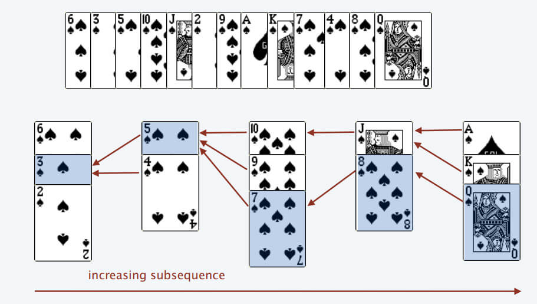
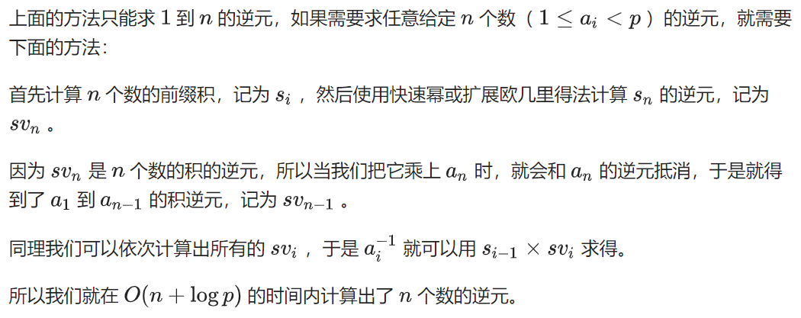
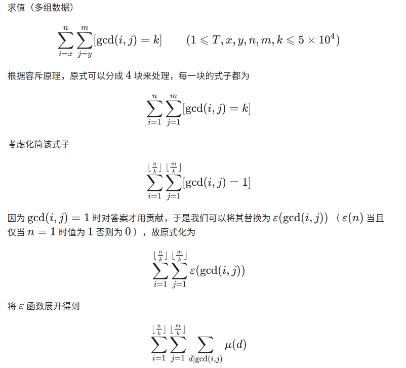
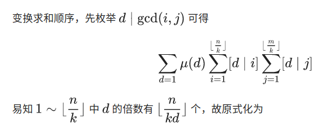
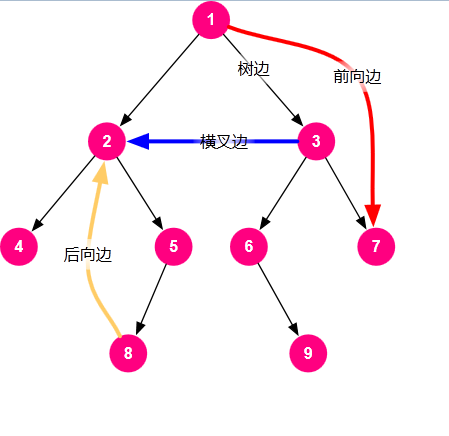

编程语言
C++
std::cin取消同步
std::cin.sync_with_stdio(false);
std::cin.tie(nullptr);
浮点数比较 可以取EPSILON = 1e-6
快读
template<typename T>
T read_integer() {
T x = 0, f = 1;
int ch = getchar();
while (ch < '0' || ch > '9') {
if (ch == '-') f = -1;
ch = getchar();
}
while (ch >= '0' && ch <= '9') {
x = (x << 1) + (x << 3) + (ch ^ 48);
ch = getchar();
}
return x * f;
}
std::sort
#include <algorithm>
#include <vector>
#include <cstdio>
struct Key {
int x;
int y;
};
int main() {
std::vector<Key> keys{{100, 3}, {200, 1}, {300, 1}};
std::sort(keys.begin(), keys.end(), [](const Key &a, const Key &b) {
// returns true if the first argument is less than (i.e. is ordered before) the second.
return a.y < b.y;
});
printf("Vector:\n");
for (const auto &key : keys) {
printf("x: %d, y: %d\n", key.x, key.y);
}
Key keys2[3] = {{100, 3}, {200, 1}, {300, 1}};
std::sort(keys2, keys2 + 3, [](const Key &a, const Key &b) {
return a.y < b.y;
});
printf("Array:\n");
for (const auto &key : keys) {
printf("x: %d, y: %d\n", key.x, key.y);
}
}
std::list （双向链表）
注意iterator类型声明方法。
#include <iterator>
#include <list>
#include <cstdio>
#include <unordered_map>
int main() {
std::list<int> l;
std::unordered_map<int, std::list<int>::iterator> front_m, back_m;
std::unordered_map<int, std::list<int>::reverse_iterator> front_rm, back_rm;
for (int i = 0; i < 4; ++i) {
l.push_back(i);
back_m[i] = std::prev(l.end());
back_rm[i] = l.rbegin();
}
printf("std::prev(l.end()), l.rbegin(). l.rbegin() is dummy node\n");
for (int i = 0; i < 4; ++i) {
printf("%d %d\n", *back_m[i], *back_rm[i]);
}
l.clear();
for (int i = 0; i < 4; ++i) {
l.push_front(i);
front_m[i] = l.begin();
front_rm[i] = std::prev(l.rend());
}
printf("l.begin(), std::prev(l.rend())\n");
for (int i = 0; i < 4; ++i) {
printf("%d %d\n", *front_m[i], *front_rm[i]);
}
printf("erase 1\n");
l.erase(front_m[1]);
for (auto e : l) {
printf("%d ", e);
}
return 0;
}
Output:
std::prev(l.end()), l.rbegin(). l.rbegin() is dummy node
0 3
1 3
2 3
3 3
l.begin(), std::prev(l.rend())
0 0
1 1
2 2
3 3
erase 1
3 2 0
std::stack
std::string 也可以当作栈使用。
std::string s;
s.push_back('a');
s.back();
s.pop_back();
Java
快读
import java.io.BufferedReader;
import java.io.IOException;
import java.io.InputStreamReader;
import java.util.StringTokenizer;
class FastReader {
BufferedReader br;
StringTokenizer st;
public FastReader() {
br = new BufferedReader(new InputStreamReader(System.in));
}
String next() {
while (st == null || !st.hasMoreElements()) {
try {
st = new StringTokenizer(br.readLine());
} catch (IOException e) {
e.printStackTrace();
}
}
return st.nextToken();
}
int nextInt() {
return Integer.parseInt(next());
}
long nextLong() {
return Long.parseLong(next());
}
double nextDouble() {
return Double.parseDouble(next());
}
String nextLine() {
String str = "";
try {
str = br.readLine();
} catch (IOException e) {
e.printStackTrace();
}
return str;
}
}
算法基础
二分查找
https://leetcode.cn/problems/binary-search/?envType=problem-list-v2&envId=binary-search
非递归
class Solution {
public:
int search(vector<int>& nums, int target) {
int left = 0;
int right = nums.size() - 1;
while (left <= right) {
int mid = (left + right) / 2;
if (nums[mid] == target) return mid;
if (nums[mid] < target) left = mid + 1;
else right = mid - 1;
}
return -1;
}
};
寻找旋转数组最小值
有时候循环条件是left < right，有时候是left <= right，具体看题目要求。
数组长度为2时，left == mid，所以left必须left = mid + 1，否则会死循环。
如果希望right不会比left小，那么right = mid，否则right = mid - 1。
class Solution {
public:
int findMin(vector<int>& nums) {
int left = 0;
int right = nums.size() - 1;
while (left < right) {
int mid = (left + right) / 2;
if (nums[mid] > nums.back()) {
left = mid + 1;
} else {
right = mid;
}
}
return nums[left];
}
};
前缀和
CF1426D：给一个长为n的序列，求至少插入几个数，使得连续子序列的和均不为0
解：求前缀和，若出现2个相等的前缀和prefix[i]、prefix[j]，则说明i-1到j之间的数和为0
// Copyright (c) 2021, Jiang Yinzuo. All rights reserved.
#include <cstdio>
#include <unordered_set>
using std::unordered_set;
long long a[200009];
int main() {
int n;
scanf("%d", &n);
for (int i = 0; i < n; ++i) {
scanf("%lld", a + i);
}
unordered_set<long long> prefixs;
prefixs.insert(0);
long long prefix = 0;
int ans = 0;
for (int i = 0; i < n; ++i) {
prefix += a[i];
if (prefixs.find(prefix) != prefixs.end()) {
++ans;
prefixs.clear();
prefix = a[i];
prefixs.insert(0);
}
prefixs.insert(prefix);
}
printf("%d\n", ans);
return 0;
}
滑动窗口 [interview]
双指针 [interview]
单调栈 [interview]
维护一个单调递减的栈
动态规划
背包问题
背包dp例题
bitset优化
链接：https://ac.nowcoder.com/acm/problem/17193?&headNav=acm 来源：牛客网
$$ 一共有 n个数，第 i 个数是 x_i , x_i 可以取 [l_i , r_i] 中任意的一个值。 设 S=\sum x_i^2,求 S 种类数。$$ $$ 设dp[i][j] = 前i个数的平方和能否等于j。则dp[i][j] = dp[i-1][j - x_i^2]，可以用bitset优化 $$
//
// Created by jiang on 2020/8/16.
// https://ac.nowcoder.com/acm/problem/17193?&headNav=acm
#include <cstdio>
#include <bitset>
std::bitset<1000001> dp[101];
int main() {
int n, l, r;
scanf("%d", &n);
dp[0][0] = true;
for (int i = 1; i <= n; ++i) {
scanf("%d %d", &l, &r);
for (int j = l; j <= r; ++j) {
dp[i] |= dp[i-1] << (j*j);
}
}
printf("%zu\n", dp[n].count());
return 0;
}
二维背包
leetcode 879 盈利计划
集团里有 n 名员工，他们可以完成各种各样的工作创造利润。
第 i 种工作会产生 profit[i] 的利润，它要求 group[i] 名成员共同参与。如果成员参与了其中一项工作，就不能参与另一项工作。
工作的任何至少产生 minProfit 利润的子集称为盈利计划。并且工作的成员总数最多为 n 。
有多少种计划可以选择？因为答案很大，所以 返回结果模 10^9 + 7 的值。
来源：力扣（LeetCode） 链接：https://leetcode-cn.com/problems/profitable-schemes
#利润背包，可以溢出
for p in ps:
for i in range(P+p, p-1, -1):
dp[min(i,P)] += dp[i-n]
#人员背包，不能溢出
for g in gs:
for i in range(G, g-1, -1):
dp[i] += dp[i-n]
# 二维背包
for p, g in zip(profit, group):
for i in range(P+p, p-1, -1):
for j in range(G , g-1, -1):
# 利润超过P的也放在 dp[P] 里 方便最后的统计
dp[min(P,i)][j] += dp[i-p][j-g]
# 题解
class Solution:
def profitableSchemes(self, G: int, P: int, group: List[int], profit: List[int]) -> int:
# dp[P][G] 达到P利润，需要的人数G 的方法数
dp = [[0] * (N + 1) for _ in range(P + 1)]
dp[0][0] = 1
for p, g in zip(profit, group):
for i in range(P+p, p-1, -1):
for j in range(G , g-1, -1):
dp[min(P,i)][j] += dp[i-p][j-g]
return sum(dp[P]) % (10 ** 9 + 7)
class Solution {
public:
int profitableSchemes(int n, int minProfit, vector<int> &group, vector<int> &profit) {
vector<vector<long long>> dp(minProfit + 1, vector<long long>(n + 1, 0));
dp[0][0] = 1;
for (int i = 0; i < group.size(); ++i) {
// 二维背包 两重for循环可以交换位置
for (int j = n; j >= group[i]; --j) {
for (int k = minProfit + profit[i]; k >= profit[i]; --k) {
dp[std::min(k, minProfit)][j] += dp[k - profit[i]][j - group[i]];
}
}
}
long long ans = 0;
for (int i = 0; i <= n; ++i) {
ans = (ans + dp[minProfit][i]) % 1000000007;
}
return (int)ans;
}
};
最长公共子串 [interview]
dp[i][j]表示在str1中以第i个字符结尾，在str2中以第j个字符结尾时的公共子串长度。
$$ dp(i, j) = \begin{cases} dp(i-1, j-1) + 1 & str1[i] = str2[j] \ 0 & str1[i] \neq str2[j] \end{cases} $$
牛客 NC127 最长公共子串
class Solution {
public:
string LCS(string str1, string str2) {
//dp[i][j]表示到str1第i个个到str2第j个为止的公共子串长度
vector<vector<int> > dp(str1.length() + 1, vector<int>(str2.length() + 1, 0));
int max = 0;
int pos = 0;
for(int i = 1; i <= str1.length(); i++){
for(int j = 1; j <= str2.length(); j++){
//如果该两位相同
if(str1[i - 1] == str2[j - 1]){
//则增加长度
dp[i][j] = dp[i - 1][j - 1] + 1;
}
else{
//该位置为0
dp[i][j] = 0;
}
//更新最大长度
if(dp[i][j] > max){
max = dp[i][j];
pos = i - 1;
}
}
}
return str1.substr(pos - max + 1, max);
}
};
最长公共子序列 [interview]
f(i, j)表示只考虑序列A前i个元素，序列B前j个元素的最长公共子序列时的长度。
$$ f(i, j) = \begin{cases} f(i-1, j-1) + 1 & A[i] = B[j] \ max(f(i-1, j), f(i, j-1)) & A[i] \neq B[j] \end{cases} $$
如果要输出最长公共子序列，可以根据dp数组逆推。
牛客BM65 最长公共子序列(二)
class Solution {
public:
string LCS(string s1, string s2) {
//只要有一个空字符串便不会有子序列
if(s1.length() == 0 || s2.length() == 0)
return "-1";
int len1 = s1.length();
int len2 = s2.length();
//dp[i][j]表示第一个字符串到第i位，第二个字符串到第j位为止的最长公共子序列长度
vector<vector<int>> dp(len1 + 1, vector<int>(len2 + 1, 0));
//遍历两个字符串每个位置求的最长长度
for(int i = 1; i <= len1; i++){
for(int j = 1; j <= len2; j++){
//遇到两个字符相等
if(s1[i - 1] == s2[j -1])
//来自于左上方
dp[i][j] = dp[i - 1][j - 1] + 1;
//遇到的两个字符不同
else
//来自左边或者上方的最大值
dp[i][j] = max(dp[i - 1][j], dp[i][j - 1]);
}
}
//从动态规划数组末尾开始
int i = len1, j = len2;
stack<char> s;
while(dp[i][j]){
//来自于左方向
if(dp[i][j] == dp[i - 1][j])
i--;
//来自于上方向
else if(dp[i][j] == dp[i][j - 1])
j--;
//来自于左上方向
else if(dp[i][j] > dp[i - 1][j - 1]){
i--;
j--;
//只有左上方向才是字符相等的情况，入栈，逆序使用
s.push(s1[i]);
}
}
string res = "";
//拼接子序列
while(!s.empty()){
res += s.top();
s.pop();
}
//如果两个完全不同，返回字符串为空，则要改成-1
return res != "" ? res : "-1";
}
};
最长递增子序列

仅输出长度
二分查找 $$O(nlogn)$$
// 严格递增
#include <cstdio>
#include <algorithm>
const int MAX_N = 200000;
int arr[MAX_N] = {0};
int main() {
int n;
scanf("%d", &n);
int element, idx = 0;
int *index;
for (int i = 0; i < n; ++i) {
scanf("%d", &element);
if ((index = std::lower_bound(arr, arr + idx, element)) == arr + idx) idx++;
*index = element;
}
printf("%d\n", idx);
for (int i = 0; i < idx; ++i) {
printf("%d ", arr[i]);
}
printf("\n");
return 0;
}
// 单调递增
std::vector<int> get_lcs(const std::vector<int> &vec) {
std::vector<int> lcs;
decltype(lcs.begin()) place;
for (auto &e : vec) {
if ((place = std::upper_bound(lcs.begin(), lcs.end(), e)) == lcs.end())
lcs.push_back(e);
else
*place = e;
}
return lcs;
}
打印序列
求逆序对的个数
相当于原序列长度-最长递增子序列长度
树形DP
Leetcode 834. 树中距离之和
第一次dfs求所有子树的高度以及根节点到其它节点距离之和。
第二次dfs开始换根，求根节点到其它节点距离之和。
class Solution {
public:
vector<vector<int>> tree;
vector<int> sub_tree_size;
vector<int> distance_sum;
vector<int> ans;
void build_tree(int N, vector<vector<int>> &edges) {
tree.resize(N);
for (auto &e : edges) {
tree[e[0]].push_back(e[1]);
tree[e[1]].push_back(e[0]);
}
}
vector<int> sumOfDistancesInTree(int N, vector<vector<int>> &edges) {
if (N == 1) return {0};
build_tree(N, edges);
sub_tree_size.resize(N);
ans.resize(N);
distance_sum.resize(N);
dfs(0, -1);
dfs2(0, -1);
return ans;
}
void dfs(int cur_node, int father) {
sub_tree_size[cur_node] = 1;
distance_sum[cur_node] = 0;
for (auto &child : tree[cur_node]) {
if (child != father) {
dfs(child, cur_node);
sub_tree_size[cur_node] += sub_tree_size[child];
distance_sum[cur_node] += distance_sum[child] + sub_tree_size[child];
}
}
}
void dfs2(int cur_node, int father) {
if (father != -1) {
ans[cur_node] = ans[father] + sub_tree_size[0] - 2 * sub_tree_size[cur_node];
} else {
ans[cur_node] = distance_sum[cur_node];
}
for (auto &child : tree[cur_node]) {
if (child != father) {
dfs2(child, cur_node);
}
}
}
};
鸡蛋掉落
https://leetcode-cn.com/problems/super-egg-drop/
K个鸡蛋，N层楼，求最坏情况丢几次鸡蛋，就能确定鸡蛋最低摔碎的位置。
设$$dp[t][k]$$表示操作t次，k个鸡蛋，最多能确定几层楼。$$dp[1][k]=1, dp[t][1]=t,\ dp[t][k] = 1 + dp[t-1][k]+dp[t-1][k-1]$$
第一次丢鸡蛋在$$dp[t-1][k-1]$$楼，如果碎了，后面t-1次操作，k-1个鸡蛋能确定位置；如果没碎，往上还能确定$$dp[t-1][k]$$层楼
class Solution {
public:
int superEggDrop(int k, int n) {
if (k == 1 || n == 1) return n;
std::vector<std::vector<int>> dp(n+1, std::vector<int>(k+1));
for (int _k = 1; _k <= k; ++_k)
dp[1][_k] = 1;
for (int t = 1; t <= n; ++t)
dp[t][1] = t;
for (int t = 2; t <= n; ++t) {
for (int _k = 2; _k <= k; ++_k) {
dp[t][_k] = 1 + dp[t-1][_k] + dp[t-1][_k-1];
if (dp[t][_k] >= n) {
return t;
}
}
}
return -1;
}
};
区间DP
https://codeforces.com/problemset/problem/1509/C
给n个数$$a_1,a_2,…,a_n$$，记$$d_i=max(a_1,a_2,…,a_i)−min(a_1,a_2,…,a_i).$$对它们排序，使得 $$d_1+d_2+⋯+d_n$$最小
# -*- coding: utf-8 -*-
n = int(input())
arr = sorted(map(int, input().split()))
dp = [[0] * n for _ in range(n)]
for i in reversed(range(n)):
for j in range(i + 1, n):
dp[i][j] = arr[j] - arr[i] + min(dp[i + 1][j], dp[i][j - 1])
print(dp[0][-1])
数位DP
hdu2089 区间内不能出现4和62的数字个数
//
// Created by Jiang Yinzuo on 2020/4/8.
//
#include <cstdio>
#include <cstring>
int dp[8][2];
// 数位数组，高位和数字的高位对应，最低位下标为1
int digit[8];
/**
* 从最高位往下搜索，如果遍历时最高不受限制，则将搜索结果存入dp数组。
*
* @param place 当前搜索到第几位
* @param pre_is_six 该数字高位是不是6
* @param is_highest 当前位遍历时是否受到上限限制
*/
int dfs(int place, bool pre_is_six, bool is_highest) {
if (place == 0) return 1;
// 先前搜索过，直接返回
if (!is_highest && dp[place][pre_is_six] != -1)
return dp[place][pre_is_six];
// 枚举该位数字的上限
int limit = is_highest ? digit[place] : 9;
int result = 0;
for (int num = 0; num <= limit; ++num) {
if (num == 4 || (pre_is_six && num == 2)) continue;
// 只有当前位搜索上限受到限制，且当前位枚举到最高位时，下一位的上限才受到限制
result += dfs(place - 1, num == 6, is_highest && num == limit);
}
if (!is_highest)
dp[place][pre_is_six] = result;
return result;
}
int solve(int num) {
int i = 0;
while (num) {
digit[++i] = num % 10;
num /= 10;
}
return dfs(i, false, true);
}
int main() {
int a, b;
memset(dp, -1, sizeof(dp));
while (scanf("%d%d", &a, &b), a || b) {
printf("%d\n", solve(b) - solve(a - 1));
}
return 0;
}
hdu3555 区间内出现49的数字个数
//
// Created by Jiang Yinzuo on 2020/4/8.
//
#include <iostream>
#include <cstring>
long long dp[64][2];
int digit[64];
long long dfs(int place, bool pre_is_four, bool is_limited) {
if (place == 0) return 1;
if (!is_limited && dp[place][pre_is_four] != -1) return dp[place][pre_is_four];
long long result = 0;
int limit = is_limited ? digit[place] : 9;
for (int i = 0; i <= limit; ++i) {
if (pre_is_four && i == 9) continue;
result += dfs(place - 1, i == 4, is_limited && i == limit);
}
if (!is_limited) dp[place][pre_is_four] = result;
return result;
}
long long solve(long long num) {
long long tempNum = num;
int i = 0;
while (tempNum) {
digit[++i] = tempNum % 10;
tempNum /= 10;
}
return num + 1 - dfs(i, false, true);
}
int main() {
std::ios::sync_with_stdio(false);
std::cin.tie(0);
memset(dp, -1, sizeof(dp));
int t;
std::cin >> t;
long long n;
while (t--) {
std::cin >> n;
std::cout << solve(n) << std::endl;
}
return 0;
}
计算几何
判断点在线段哪一边
计算叉积，大于0在上面，小于0在下面。
已知$$P_1(x_0, y_0),\space P_2(x_1, y_1), \space P_3(x_3, y_3)$$三个点坐标，求$$P_3$$在线段$$P_1P_2$$的哪一侧。则构造向量$$\vec{P_1P_2}, \space \vec{P_2P_3}$$，算$$\vec{P_1P_2}\times \vec{P_2P_3}$$即可。
$$\vec{(x_1, y_1)} \times \vec{(x_2, y_2)} = x_1y_2 - x_2y_1$$
struct Vector {
double x, y;
double cross_prod(Vector &v) const {
return this->x * v.y - this->y * v.x;
}
};
坐标系上一点绕原点旋转公式
$$ X_1=\cos(A)\cdot X_0 - \sin(A)\cdot Y_0;
Y_1=\sin(A)\cdot X_0 + \cos(A)\cdot Y_0; $$
树
满二叉树
节点个数必为奇数个
香港icpc2019
给定一棵树，两个人轮流进行游戏，一个人每次能从树上取走一棵符合满二叉树性质的子树，询问谁能必胜。
解：满二叉树节点个数必为奇数个。故节点个数为奇数时先手必胜，否则后手必胜。
#include <cstdio>
int main() {
int t;
scanf("%d", &t);
while (t--) {
int n;
scanf("%d", &n);
for (int i = 0; i < n - 1; ++i) scanf("%*d%*d");
puts(n & 1 ? "Alice" : "Bob");
}
return 0;
}
dfs求两点距离
int dis;
void get_dis(int cur, int end, int father, int depth) {
if (cur == end) {
dis = depth;
return;
}
for (auto i : tree[cur]) {
if (i != father) {
get_dis(i, end, cur, depth + 1);
}
}
}
DFS求每个点的高度
int height[1000006];
void get_height(int cur, int depth) {
if (sons[cur].empty()) {
height[cur] = 0;
return;
}
int h = 0;
for (auto &i : sons[cur]) {
get_height(i, depth + 1);
h = std::max(h, height[i]);
}
height[cur] = h + 1;
}
倍增求LCA
/**
* luogu3379
*/
#include <cstdio>
#include <algorithm>
using namespace std;
struct Edge {
int v;
int next;
} edges[500002 << 1];
int heads[500002];
int total = 0;
int depth[500002] = {0};
int ancestors[500002][22] = {0};
int LOG_2[500002];
void add_edge(int u, int v) {
edges[++total] = {v, heads[u]};
heads[u] = total;
}
void dfs(int cur_v, int parent) {
ancestors[cur_v][0] = parent;
depth[cur_v] = depth[parent] + 1;
for (int i = 1; i <= LOG_2[depth[cur_v]]; ++i) {
ancestors[cur_v][i] = ancestors[ancestors[cur_v][i-1]][i-1];
}
for (int i = heads[cur_v]; i; i = edges[i].next) {
if (edges[i].v != parent) {
dfs(edges[i].v, cur_v);
}
}
}
int lca(int a, int b) {
if (depth[a] < depth[b]) {
swap(a, b);
}
while (depth[a] > depth[b]) {
a = ancestors[a][LOG_2[depth[a]-depth[b]]];
}
if (a == b) {
return a;
}
for (int i = LOG_2[depth[a]]; i >= 0; --i) {
if (ancestors[a][i] != ancestors[b][i]) {
a = ancestors[a][i];
b = ancestors[b][i];
}
}
return ancestors[a][0];
}
void get_log_2() {
LOG_2[1] = 0;
for (int i = 2; i <= 500001; ++i) {
LOG_2[i] = LOG_2[i>>1] + 1;
}
}
int main() {
get_log_2();
int n, m, s;
scanf("%d %d %d", &n, &m, &s);
int x, y;
for (int i = 0; i < n - 1; ++i) {
scanf("%d %d", &x, &y);
add_edge(x, y);
add_edge(y, x);
}
dfs(s, 0);
int a, b;
for (int i = 0; i < m; ++i) {
scanf("%d %d", &a, &b);
printf("%d\n", lca(a, b));
}
return 0;
}
Tarjan求LCA
Tarjan算法求LCA的本质是用并查集对向上标记法进行优化，是一种离线算法，时间复杂度 $$O(n+m)$$
求LCA的Tarjan算法主体由dfs实现，并用并查集进行优化。对于每个节点，我们增加一个标记：
- 若该节点没有访问过，则初值为0
- 若该节点已访问但还没有回溯，则标记为1
- 若该节点已访问且已回溯，则标记为2
显然，对于当前访问的节点 x，它到根节点的路径一定都被标记为1。因此对于任意一个与 x相关的询问，设询问的另一个节点为 y，则 LCA(x,y)即为 y到根节点的路径中第一个，也就是最深的标记为1的节点。
求这个节点的方法可以用并查集优化。当一个节点的标记改为2的同时，将它合并到其父节点的集合当中。显然，此时它的父节点的标记一定为1，并且单独构成一个集合，因为这个父节点还没有进行过回溯操作。
在合并过后，遍历关于当前节点 x的所有询问，对于任意一个询问，若 y的标记为2，说明其已经被访问过，并且它的并查集指向的那个节点，也就是 y到根节点的路径中最深的还没有回溯的节点，一定就是 LCA(x,y)。
对于询问，我们可以用一个不定长数组存储与每个节点相关的询问，并且每个询问用一个二元组表示，第一维存储该询问的另一个节点，第二维存储该询问输入的次序，以便按顺序输出
这样，Tarjan算法求LCA的步骤就很明了了：
-
从根节点开始进行dfs
-
将当前节点标记为1
-
遍历当前节点的所有出边；若当前边的终点还没有访问过，则访问它，访问过后将该节点合并到当前节点的集合中；
-
遍历与当前节点相关的所有询问；若当前询问的另一个节点的标记为2，则该询问的答案即为另一个节点所在集合的代表元素
-
将当前节点标记为2
题目描述
如题，给定一棵有根多叉树，请求出指定两个点直接最近的公共祖先。
输入格式
第一行包含三个正整数 N,M,S，分别表示树的结点个数、询问的个数和树根结点的序号。
接下来 N-1 行每行包含两个正整数 x, y，表示 xx 结点和 y 结点之间有一条直接连接的边（数据保证可以构成树）。
接下来 M 行每行包含两个正整数 a, b，表示询问 a结点和 b 结点的最近公共祖先。
输出格式
输出包含 M 行，每行包含一个正整数，依次为每一个询问的结果。
/* input
5 5 4
3 1
2 4
5 1
1 4
2 4
3 2
3 5
1 2
4 5
*/
/* output
4
4
1
4
4
*/
//
// Created by Jiang Yinzuo on 2020/10/28.
// Tarjan Algorithm O(n + m)
#include <cstdio>
#include <vector>
constexpr int MAX_N = 500000;
constexpr int MAX_M = 500000;
std::vector<int> tree[MAX_N + 1];
/// queries[x] = {y, id}
std::vector<std::pair<int, int> > queries[MAX_N];
///// Union Find /////
int father[MAX_N + 1];
int get_father(int v) {
return father[v] == v ? v : father[v] = get_father(father[v]);
}
int answer[MAX_M + 1];
void tarjan(int cur_v) {
static int tag[MAX_N + 1] = {0};
tag[cur_v] = 1;
for (auto i : tree[cur_v]) {
if (tag[i] == 0) {
tarjan(i);
father[i] = cur_v; // merge child vertex to self
}
}
for (auto &q : queries[cur_v]) {
int y = q.first, id = q.second;
if (tag[y] == 2) answer[id] = get_father(y);
}
tag[cur_v] = 2;
}
int main() {
int n, m, root;
scanf("%d %d %d", &n, &m, &root);
for (int i = 0; i < n - 1; ++i) {
int u, v;
scanf("%d %d", &u, &v);
tree[u].push_back(v);
tree[v].push_back(u);
}
for (int i = 0; i < m; ++i) {
int a, b;
scanf("%d %d", &a, &b);
queries[a].emplace_back(b, i);
queries[b].emplace_back(a, i);
}
for (int i = 0; i <= n; ++i) father[i] = i;
tarjan(root);
for (int i = 0; i < m; ++i) printf("%d\n", answer[i]);
return 0;
}
树上差分
根据每条边两边的点的情况，计算边的贡献的dfs
CF1401D
2017 ICPC 沈阳 Tree
2019 CCPC 威海 C
给一棵带边权的树$$<E, V, W>$$，给3个树上的点集$$V_1, V_2, V_3 \subseteq V$$。记$$v_1 \in V_1, v_2 \in V_2, v_3 \in V_3$$，求$$\mathbb{E}[{f(v_1, v_2, v_3)}]$$。$$f(v_1, v_2, v_3) = \min \limits_{v \in V}(\sum_{i=1}^3 distance(v_i, v))$$
解：观察得，$$f(v_1, v_2, v_3) = \frac{1}{2}(distance(v_1, v_2) + distance(v_2, v_3) + distance(v_3, v_1))$$
故 $$ \mathbb{E}[{f(v_1, v_2, v_3)}] = \mathbb{E}[\frac{1}{2}(distance(v_1, v_2) + distance(v_2, v_3) + distance(v_3, v_1))] \ = \frac{1}{2}( \mathbb{E}[distance(v_1, v_2)] + \mathbb{E}[distance(v_2, v_3)] + \mathbb{E}[distance(v_1, v_3)]) $$ 对一棵树，计算每条边的贡献：一条边的两侧分别有多少个$$v_1, v_2, v_3$$
#include <cstdio>
#include <vector>
constexpr int MAX_N = 200001;
struct Vertex {
int to;
unsigned long long weight;
};
std::vector<Vertex> tree[MAX_N];
long long sci_cnt[3][MAX_N] = {0};
long long tot_cnt[3];
bool has[3][MAX_N] = {false};
unsigned long long ans[3] = {0};
void dfs(int cur_v, int father, unsigned long long fa_cur_weight) {
for (int i = 0; i < 3; ++i) {
sci_cnt[i][cur_v] += has[i][cur_v];
}
for (auto &v : tree[cur_v]) {
if (v.to != father) {
dfs(v.to, cur_v, v.weight);
for (int i = 0; i < 3; ++i) {
sci_cnt[i][cur_v] += sci_cnt[i][v.to];
}
}
}
for (int i = 0; i < 3; ++i) {
ans[i] += fa_cur_weight * (sci_cnt[i][cur_v] *
(tot_cnt[(i + 1) % 3] - sci_cnt[(i + 1) % 3][cur_v]) +
sci_cnt[(i + 1) % 3][cur_v] * (tot_cnt[i] - sci_cnt[i][cur_v]));
}
}
int main() {
int n;
scanf("%d", &n);
for (int i = 0; i < n - 1; ++i) {
int u, v;
unsigned long long w;
scanf("%d %d %llu", &u, &v, &w);
tree[u].push_back({v, w});
tree[v].push_back({u, w});
}
int i = 0;
for (auto &ha : has) {
int plc;
scanf("%d", &tot_cnt[i]);
for (int j = 0; j < tot_cnt[i]; ++j) {
scanf("%d", &plc);
ha[plc] = true;
}
++i;
}
dfs(1, 0, 0);
double answer = 0;
for (i = 0; i < 3; ++i) {
answer += ans[i] / (double )(tot_cnt[i] * tot_cnt[(i+1)%3]);
}
printf("%.12lf\n", answer / (double )2);
return 0;
}
树的直径
两次dfs
先从任意一点P出发，找离它最远的点Q，再从点Q出发，找离它最远的点W，W到Q的距离就是是的直径
int max_depth = 0;
int end1;
void get_diameter(int cur, int father, int depth) {
if (tree[cur].size() == 1 && father != -1 && depth > max_depth) {
max_depth = depth;
end1 = cur;
}
for (auto i : tree[cur]) {
if (i != father) {
get_diameter(i, cur, depth + 1);
}
}
}
int main() {
max_depth = 0;
get_diameter(1, -1, 1);
get_diameter(end1, -1, 1);
int diameter = max_depth;
return 0;
}
树形DP
树的中心
树的直径的中点称为树的中心。以树的中心为整棵树的根时，从该根到每个叶子节点的最长路径最短
例题：给一棵树（n个点），求最少移去几个点，使得剩下的图仍然构成一棵树，且直径为k
解：设直径为D。
k为偶数时，一棵树上存在一点V使得树上任意一点到V的距离小于等于D/2。
k为奇数时，存在一条边E使得树上任意一点到E的其中一个端点距离小于等于$\lfloor D/2 \rfloor$
故只需枚举点V或者边E，dfs求出距离小于等于D/2的点的个数，并维护最大值即可。
//
// Created by Jiang Yinzuo on 2020/12/11.
//
#include <cstdio>
#include <vector>
constexpr int MaxN = 2001;
std::vector<int> tree[MaxN];
std::vector<std::pair<int, int>> edges;
int ans;
void dfs(int cur_v, int father, int depth, const int max_depth) {
if (depth > max_depth) {
return;
}
--ans;
for (auto i : tree[cur_v]) {
if (i != father) {
dfs(i, cur_v, depth + 1, max_depth);
}
}
}
int main() {
int n, k;
scanf("%d %d", &n, &k);
for (int i = 0; i < n - 1; ++i) {
int u, v;
scanf("%d %d", &u, &v);
tree[u].push_back(v);
tree[v].push_back(u);
(void)edges.emplace_back(u, v);
}
int min_ans = n;
if (k % 2 == 0) {
for (int i = 1; i <= n; ++i) {
ans = n;
dfs(i, 0, 0, k / 2);
min_ans = min_ans < ans ? min_ans : ans;
}
} else {
for (auto &p : edges) {
ans = n;
dfs(p.first, p.second, 0, k / 2);
dfs(p.second, p.first, 0, k / 2);
min_ans = min_ans < ans ? min_ans : ans;
}
}
printf("%d\n", min_ans);
return 0;
}
树的重心
定义
对于树上的每一个点，计算其所有子树中最大的子树节点数，这个值最小的点就是这棵树的重心。
（这里以及下文中的“子树”都是指无根树的子树，即包括“向上”的那棵子树，并且不包括整棵树自身。）
根据定义求树的重心
//
// Created by jiang on 2020/8/15.
// poj1655
#include <cstdio>
#include <vector>
std::vector<int> tree[200001];
int size[200001];
int max_size[200001];
int n;
int centroid, min_max_size = 0x7fffffff;
void dfs(int cur_v, int father) {
size[cur_v] = max_size[cur_v] = 1;
for (auto &i : tree[cur_v]) {
if (i != father) {
dfs(i, cur_v);
size[cur_v] += size[i];
max_size[cur_v] = std::max(max_size[cur_v], size[i]);
}
}
max_size[cur_v] = std::max(max_size[cur_v], n - size[cur_v]);
if (min_max_size > max_size[cur_v]) {
centroid = cur_v;
min_max_size = max_size[cur_v];
}
}
int main() {
int t;
scanf("%d", &t);
while (t--) {
int u, v;
scanf("%d", &n);
for (int i = 1; i <= n; ++i) tree[i].clear();
for (int i = 0; i < n - 1; ++i) {
scanf("%d %d", &u, &v);
tree[u].push_back(v);
tree[v].push_back(u);
}
min_max_size = 0x7fffffff;
dfs(1, 0);
printf("%d %d\n", centroid, min_max_size);
}
return 0;
}
性质
- 以树的重心为根时，所有子树的大小都不超过整棵树大小的一半。
- 树中所有点到某个点的距离和中，到重心的距离和是最小的；如果有两个重心，那么到它们的距离和一样。
- 把两棵树通过一条边相连得到一棵新的树，那么新的树的重心在连接原来两棵树的重心的路径上。
- 在一棵树上添加或删除一个叶子，那么它的重心最多只移动一条边的距离。
- 一棵树最多有两个重心，且这两个重心相邻。
求所有子树的重心（徐州ICPC2019）
//
// Created by jiang on 2020/8/15.
// https://nanti.jisuanke.com/t/42552
#include <cstdio>
#include <vector>
#define MAXN 200001
std::vector<int> tree[MAXN];
/**
* fathers: 每个节点的父亲
* depth： 每个节点的深度
* centroids: 每个子树深度较深的重心
* size: 每个子树的节点数量
*/
int fathers[MAXN], depth[MAXN], centroids[MAXN], size[MAXN];
/**
* 合并两棵子树的重心时，新的重心一定在子树重心的连线上
* @param cur_v 合并后的根节点
* @param c1 子树1的重心
* @param c2 子树2的重心
*/
void merge(int cur_v, int c1, int c2) {
while (depth[c1] > depth[cur_v] && size[c1] < size[cur_v] - size[c1])
c1 = fathers[c1];
while (depth[c2] > depth[cur_v] && size[c2] < size[cur_v] - size[c2])
c2 = fathers[c2];
centroids[cur_v] = depth[c1] > depth[c2] ? c1 : c2;
}
void dfs(int cur_v) {
size[cur_v] = 1;
centroids[cur_v] = cur_v;
for (auto &i : tree[cur_v]) {
if (i != fathers[cur_v]) {
fathers[i] = cur_v;
depth[i] = depth[cur_v] + 1;
dfs(i);
size[cur_v] += size[i];
merge(cur_v, centroids[cur_v], centroids[i]);
}
}
}
int main() {
int n;
scanf("%d", &n);
int u, v;
for (int i = 0; i < n - 1; ++i) {
scanf("%d %d", &u, &v);
tree[u].push_back(v);
tree[v].push_back(u);
}
fathers[1] = 0;
depth[1] = 1;
dfs(1);
// 一棵树最多2个重心
for (int i = 1; i <= n; ++i) {
if (fathers[centroids[i]] && size[centroids[i]] * 2 == size[i]) {
if (centroids[i] < fathers[centroids[i]])
printf("%d %d\n", centroids[i], fathers[centroids[i]]);
else
printf("%d %d\n", fathers[centroids[i]], centroids[i]);
} else {
printf("%d\n", centroids[i]);
}
}
return 0;
}
cf1406c：把有两个重心的树变成一个重心
找到一个重心的一边的叶子节点，和另一个重心相连。
//
// Created by jiang on 2020/9/17.
// 求树的重心
#include <cstdio>
#include <vector>
std::vector<int> tree[200001];
int size[200001];
int max_size[200001];
int n;
std::vector<int> centroids;
int min_max_size;
void dfs(int cur_v, int father) {
size[cur_v] = max_size[cur_v] = 1;
for (auto &i : tree[cur_v]) {
if (i != father) {
dfs(i, cur_v);
size[cur_v] += size[i];
max_size[cur_v] = std::max(max_size[cur_v], size[i]);
}
}
max_size[cur_v] = std::max(max_size[cur_v], n - size[cur_v]);
if (min_max_size >= max_size[cur_v]) {
if (min_max_size > max_size[cur_v]) centroids.clear();
centroids.push_back(cur_v);
min_max_size = max_size[cur_v];
}
}
int main() {
int t;
scanf("%d", &t);
while (t--) {
int u, v;
scanf("%d", &n);
for (int i = 1; i <= n; ++i) tree[i].clear();
for (int i = 0; i < n - 1; ++i) {
scanf("%d %d", &u, &v);
tree[u].push_back(v);
tree[v].push_back(u);
}
min_max_size = 0x7fffffff;
dfs(1, 0);
if (centroids.size() == 1) {
printf("%d %d\n", tree[1][0], 1);
printf("%d %d\n", tree[1][0], 1);
} else {
int c1 = centroids[0], c2 = centroids[1];
int child, cur = c1, father = c2;
while (tree[cur].size() > 1) {
for (int i = 0; (child = tree[cur][i]) == father; ++i);
father = cur;
cur = child;
}
printf("%d %d\n", cur, father);
printf("%d %d\n", cur, c2);
}
}
return 0;
}
启发式合并
洛谷U41492：树上每个节点有一个颜色，求任意子树的颜色数量。
如果给每个子树记录颜色，可能会超内存。因此需要将轻儿子的颜色合并到重儿子上。
//
// Created by Jiang Yinzuo on 2020/12/7.
//
#include <cstdio>
#include <unordered_set>
#include <vector>
std::vector<int> tree[100001];
int color[100001];
int heavy_child[100001];
int size[100001];
/*
* 求重儿子
*/
void dfs1(int cur_v, int father) {
size[cur_v] = 1;
int max_size = 0, heaviest_child = 0;
for (auto &i : tree[cur_v]) {
if (i != father) {
dfs1(i, cur_v);
size[cur_v] += size[i];
if (size[i] > max_size) {
max_size = size[i];
heaviest_child = i;
}
}
}
heavy_child[cur_v] = heaviest_child;
}
int color_cnt[100001];
std::unordered_set<int> dfs2(int cur_v, int father) {
if (tree[cur_v].size() == 1 && father != 0) {
std::unordered_set<int> exist;
color_cnt[cur_v] = 1;
exist.insert(color[cur_v]);
return exist;
}
auto heavy_exist = dfs2(heavy_child[cur_v], cur_v);
for (auto &i : tree[cur_v]) {
if (i != father && i != heavy_child[cur_v]) {
auto light_exist = dfs2(i, cur_v);
heavy_exist.merge(light_exist);
}
}
heavy_exist.insert(color[cur_v]);
color_cnt[cur_v] = heavy_exist.size();
return heavy_exist;
}
int main() {
int n;
scanf("%d", &n);
for (int i = 0; i < n - 1; ++i) {
int u, v;
scanf("%d %d", &u, &v);
tree[u].push_back(v);
tree[v].push_back(u);
}
for (int i = 1; i <= n; ++i) {
scanf("%d", color + i);
}
dfs1(1, 0);
dfs2(1, 0);
int m;
scanf("%d", &m);
for (int i = 0; i < m; ++i) {
int q;
scanf("%d", &q);
printf("%d\n", color_cnt[q]);
}
return 0;
}
树链剖分
定义
1.重儿子：一个节点的儿子节点里面，以重儿子为根的子树大小最大。
2.轻儿子：一个节点的儿子节点，除了唯一一个重儿子，其余儿子为轻儿子。
3.重边：连接父亲和重儿子的边称为重边。
4.轻边：连接父亲和轻儿子的边称为轻边。
5.重链：只由重边构成的链称为重链。
将树从x到y结点最短路径上所有节点的值都加上z
树上差分O(n+m)
求树从x到y结点最短路径上所有节点的值之和
LCA：dfs O(n)预处理每个节点的dis（即到根节点的最短路径长度）
然后对于每个询问，求出x,y两点的lca，利用lca的性质distance ( x , y ) = dis ( x ) + dis ( y ) - 2 * dis ( lca )求出结果
时间复杂度O(mlogn+n)
洛谷P3384
题目描述
如题，已知一棵包含 N* 个结点的树（连通且无环），每个节点上包含一个数值，需要支持以下操作：
操作 1： 格式： 1 x y z 表示将树从 x 到 y 结点最短路径上所有节点的值都加上 z。
操作 2： 格式： 2 x y 表示求树从 x 到 y 结点最短路径上所有节点的值之和。
操作 3： 格式： 3 x z 表示将以 x为根节点的子树内所有节点值都加上 z。
操作 4： 格式： 4 x 表示求以 x为根节点的子树内所有节点值之和
输入格式
第一行包含 44 个正整数 N,M,R,P，分别表示树的结点个数、操作个数、根节点序号和取模数（即所有的输出结果均对此取模）。
接下来一行包含 N 个非负整数，分别依次表示各个节点上初始的数值。
接下来 N-1 行每行包含两个整数 x,y，表示点 x和点 y之间连有一条边（保证无环且连通）。
接下来 M行每行包含若干个正整数，每行表示一个操作，格式如下：
操作 1： 1 x y z；
操作 2： 2 x y；
操作 3： 3 x z；
操作 4： 4 x。
输出格式
输出包含若干行，分别依次表示每个操作 2 或操作 4所得的结果（对 P 取模）。
//
// Created by Jiang Yinzuo on 2020/10/28.
//
#include <cstdio>
#include <vector>
constexpr int MAX_N = 200004;
std::vector<int> tree[MAX_N + 1];
////////////// tree split
int father[MAX_N];
int depth[MAX_N];
int size[MAX_N];
int heavy_son[MAX_N] = {0};
int chain_top[MAX_N]; // chain_top[v] = top of the heavy chain containing v
int dfn[MAX_N], dfn_cnt = 0; // dfs order
int rank[MAX_N]; // rank[dfn[v]] = v
int weight[MAX_N];
int w[MAX_N];
/// process father, depth, size and heavy_son
void dfs1(int cur_v, int fa, int dep) {
father[cur_v] = fa;
depth[cur_v] = dep;
size[cur_v] = 1;
for (auto i : tree[cur_v]) {
if (i != fa) {
dfs1(i, cur_v, dep + 1);
size[cur_v] += size[i];
if (size[i] >= size[heavy_son[cur_v]]) {
heavy_son[cur_v] = i;
}
}
}
}
void dfs2(int cur_v, int top) {
chain_top[cur_v] = top;
dfn[cur_v] = ++dfn_cnt;
weight[dfn_cnt] = w[cur_v];
rank[dfn_cnt] = cur_v;
if (!heavy_son[cur_v]) return;
dfs2(heavy_son[cur_v], top);
for (auto i : tree[cur_v]) {
if (i != heavy_son[cur_v] && i != father[cur_v]) {
dfs2(i, i); // top of a heavy chain
}
}
}
///////////////////
///// segment tree
int arr[(MAX_N << 2) + 1], lazy_tag[(MAX_N << 2) + 1] = {0};
int mod;
void push_down(int cur_v, int len) {
lazy_tag[cur_v << 1] += lazy_tag[cur_v];
lazy_tag[cur_v << 1 | 1] += lazy_tag[cur_v];
arr[cur_v << 1] += lazy_tag[cur_v] * (len - (len >> 1));
arr[cur_v << 1 | 1] += lazy_tag[cur_v] * (len >> 1);
arr[cur_v << 1] %= mod;
arr[cur_v << 1 | 1] %= mod;
lazy_tag[cur_v] = 0;
}
void build(int cur_v, int l, int r) {
if (l == r) {
arr[cur_v] = weight[l] % mod;
return;
}
int mid = (l + r) / 2;
build(cur_v << 1, l, mid);
build(cur_v << 1 | 1, mid + 1, r);
arr[cur_v] = (arr[cur_v << 1] + arr[cur_v << 1 | 1]) % mod;
}
int query(int cur_v, int l, int r, int L, int R) {
int res = 0;
if (L <= l && r <= R) {
return arr[cur_v] % mod;
}
if (lazy_tag[cur_v]) push_down(cur_v, r - l + 1);
int mid = (l + r) / 2;
if (L <= mid) res = (res + query(cur_v << 1, l, mid, L, R)) % mod;
if (R > mid) res = (res + query(cur_v << 1 | 1, mid + 1, r, L, R)) % mod;
return res;
}
void update(int cur_v, int l, int r, const int L, const int R, int val) {
if (L <= l && r <= R) {
lazy_tag[cur_v] += val;
arr[cur_v] += val * (r - l + 1);
} else {
if (lazy_tag[cur_v])push_down(cur_v, r - l + 1);
int mid = (l + r) / 2;
if (L <= mid)update(cur_v << 1, l, mid, L, R, val);
if (R > mid)update(cur_v << 1 | 1, mid + 1, r, L, R, val);
arr[cur_v] = (arr[cur_v << 1] + arr[cur_v << 1 | 1]) % mod;
}
}
////////////
int n, m, r;
int query_range(int x, int y) {
int ans = 0;
// 当两个点不在同一条链上
while (chain_top[x] != chain_top[y]) {
// 把x点改为所在链顶端的深度更深的那个点
if (depth[chain_top[x]] < depth[chain_top[y]])
std::swap(x, y);
// ans加上x点到x所在链顶端 这一段区间的点权和
ans = (ans + query(1, 1, n, dfn[chain_top[x]], dfn[x])) % mod;
// 把x跳到x所在链顶端的那个点的上面一个点
x = father[chain_top[x]];
}
// 直到两个点处于一条链上
// 把x跳到x所在链顶端的那个点的上面一个点
if (depth[x] > depth[y]) std::swap(x, y);
// 把x跳到x所在链顶端的那个点的上面一个点
return (ans + query(1, 1, n, dfn[x], dfn[y])) % mod;
}
void update_range(int x, int y, int val) {
val %= mod;
while (chain_top[x] != chain_top[y]) {
if (depth[chain_top[x]] < depth[chain_top[y]])std::swap(x, y);
update(1, 1, n, dfn[chain_top[x]], dfn[x], val);
x = father[chain_top[x]];
}
if (depth[x] > depth[y])std::swap(x, y);
update(1, 1, n, dfn[x], dfn[y], val);
}
int query_subtree(int x) {
// 把x跳到x所在链顶端的那个点的上面一个点
return query(1, 1, n, dfn[x], dfn[x] + size[x] - 1);
}
void update_subtree(int x, int val) {
update(1, 1, n, dfn[x], dfn[x] + size[x] - 1, val);
}
int main() {
scanf("%d %d %d %d", &n, &m, &r, &mod);
for (int i = 1; i <= n; ++i) {
scanf("%d", w + i);
}
for (int i = 0; i < n - 1; ++i) {
int u, v;
scanf("%d %d", &u, &v);
tree[u].push_back(v);
tree[v].push_back(u);
}
dfs1(r, 0, 1); // r:树的根
dfs2(r, r);
build(1, 1, n);
for (int i = 0; i < m; ++i) {
int op, x, y, z;
scanf("%d", &op);
if (op == 1) {
scanf("%d %d %d", &x, &y, &z);
update_range(x, y, z);
} else if (op == 2) {
scanf("%d %d", &x, &y);
printf("%d\n", query_range(x, y));
} else if (op == 3) {
scanf("%d %d", &x, &z);
update_subtree(x, z);
} else {
scanf("%d", &x);
printf("%d\n", query_subtree(x));
}
}
return 0;
}
数据结构
并查集
//
// Created by Jiang Yinzuo on 2020/7/18.
// luogup3367
#include <cstdio>
#define MAX_E_NUM 10004
int parents[MAX_E_NUM];
void init(int n) {
for (int i = 1; i <= n; ++i) {
parents[i] = i;
}
}
int find_parent(int v) {
return parents[v] == v ? v : parents[v] = find_parent(parents[v]);
}
void union_set(int v1, int v2) {
int p1 = find_parent(v1);
int p2 = find_parent(v2);
parents[p1] = p2;
}
int main() {
int n, m;
scanf("%d %d", &n, &m);
init(n);
int op, u, v;
for (int i = 0; i < m; ++i) {
scanf("%d %d %d", &op, &u, &v);
if (op == 1) {
union_set(u, v);
} else {
puts(find_parent(u) == find_parent(v) ? "Y" : "N");
}
}
return 0;
}
启发式合并
//
// Created by Jiang Yinzuo on 2020/7/18.
//
#include <cstdio>
#include <vector>
#define MAX_E_NUM 10004
int parents[MAX_E_NUM];
void init(int n) {
for (int i = 1; i <= n; ++i) {
parents[i] = i;
}
}
/**
* 路径压缩
* @param v
* @return
*/
int find_parent(int v) {
return parents[v] == v ? v : parents[v] = find_parent(parents[v]);
}
std::vector<int> size(MAX_E_NUM, 1);
/**
* 启发式合并
* @param v1
* @param v2
*/
void union_set(int v1, int v2) {
int p1 = find_parent(v1);
int p2 = find_parent(v2);
if (p1 == p2) return;
if (size[p1] > size[p2]) // 保证小的合到大的里
std::swap(p1, p2);
parents[p1] = p2;
size[p2] += size[p1];
}
int main() {
int n, m;
scanf("%d %d", &n, &m);
init(n);
int op, u, v;
for (int i = 0; i < m; ++i) {
scanf("%d %d %d", &op, &u, &v);
if (op == 1) {
union_set(u, v);
} else {
puts(find_parent(u) == find_parent(v) ? "Y" : "N");
}
}
return 0;
}
树状数组
树状数组特点：
- 每一层内，末尾0的个数均相同，第一层0个0，第二次1个0...
- 单点更新：节点x的父节点为x+lowbit(x)
- 区间查询：不停地减去lowbit(x)直到x为0
https://blog.csdn.net/TheWayForDream/article/details/118436732
class TreeArr {
int n;
vector<int> inner;
// ((Not x)+1) And x，即求x的最低位1
constexpr int lowbit(int x) {
return x & (-x);
}
public:
TreeArr(int _n) : n(_n), inner(_n + 1) {
}
void add_val_to_ith(int i, int val) {
while (i <= n) {
inner[i] += val;
i += lowbit(i);
}
}
// [1, i]
int query_sum_1_to_i(int i) {
int res = 0;
while (i > 0) {
res += inner[i];
i -= lowbit(i);
}
return res;
}
};
template<const int T>
struct TreeArray {
int arr[T + 1];
int lowbit(int x) {
return x & (-x);
}
// add value to arr[i]
void update(int i, int value) {
while (i <= T) {
arr[i] += value;
i += lowbit(i);
}
}
// query sum of [1, i]
int query(int i) {
int total = 0;
while (i > 0) {
total += arr[i];
i -= lowbit(i);
}
return total;
}
};
线段树
zkw线段树
TODO
#include <cstdio>
#include <cstring>
namespace seg_tree {
int arr[50005];
int tree[50005 << 2];
/**
* 区间查询
* @param left 线段树节点左边界
* @param right 线段树节点右边界
* @param cur_idx 当前线段树节点标记
* @param arr_left 区间查询左边界
* @param arr_right 区间查询右边界
* @return
*/
int query(int left, int right, int cur_idx, const int arr_left, const int arr_right) {
if (arr_left <= left && right <= arr_right) {
return tree[cur_idx];
}
int mid = (left + right) / 2;
int result = 0;
if (arr_left <= mid) {
result = query(left, mid, cur_idx << 1, arr_left, arr_right);
}
if (mid + 1 <= arr_right) {
result += query(mid + 1, right, (cur_idx << 1) | 1, arr_left, arr_right);
}
return result;
}
/**
* 单点更新线段树
* @param left 线段树节点左边界
* @param right 线段树节点右边界
* @param cur_idx 当前线段树节点标号
* @param arr_idx 更新的原始数组标号
* @param value 更新值
*/
void update(int left, int right, int cur_idx, const int arr_idx, const int value) {
if (left == right) {
tree[cur_idx] += value;
return;
}
int mid = (left + right) / 2;
if (arr_idx <= mid) {
update(left, mid, cur_idx << 1, arr_idx, value);
} else {
update(mid + 1, right, (cur_idx << 1) | 1, arr_idx, value);
}
tree[cur_idx] = tree[cur_idx << 1] + tree[(cur_idx << 1) | 1];
}
/**
* 建立线段树
* @param left 线段树节点左边界
* @param right 线段树节点右边界
* @param cur_idx 当前线段树节点标号
*/
void build(int left, int right, int cur_idx) {
if (left == right) {
tree[cur_idx] = arr[left];
return;
}
int mid = (left + right) / 2;
build(left, mid, cur_idx << 1);
build(mid + 1, right, (cur_idx << 1) | 1);
tree[cur_idx] = tree[cur_idx << 1] + tree[(cur_idx << 1) | 1];
}
}
int main() {
int t, n;
scanf("%d", &t);
for (int kase = 1; kase <= t; ++kase) {
scanf("%d", &n);
for (int i = 1; i <= n; ++i) {
scanf("%d", &seg_tree::arr[i]);
}
seg_tree::build(1, n, 1);
printf("Case %d:\n", kase);
char query_str[6];
int l, r;
while (true) {
scanf("%s", query_str);
if (strcmp(query_str, "End") == 0) {
break;
}
scanf("%d %d", &l, &r);
if (strcmp(query_str, "Query") == 0) {
printf("%d\n", seg_tree::query(1, n, 1, l, r));
} else if (strcmp(query_str, "Add") == 0) {
seg_tree::update(1, n, 1, l, r);
} else if (strcmp(query_str, "Sub") == 0) {
seg_tree::update(1, n, 1, l, -r);
}
}
}
return 0;
}
/**
* luogu3372
*/
#include <cstdio>
long long seq[100008];
long long seg_tree[400008];
long long add_tag[400008] = {0};
/**
* 建立线段树
* @param l 区间左端点
* @param r 区间右端点
* @param num 序号
*/
void build(int l, int r, int num) {
if (l == r) {
seg_tree[num] = seq[l];
return;
}
build(l, (l + r) / 2, num << 1);
build((l + r) / 2 + 1, r, num << 1 | 1);
seg_tree[num] = seg_tree[num << 1] + seg_tree[num << 1 | 1];
}
/**
* 下推懒惰标记
* @param l 左区间端点
* @param r 右区间端点
* @param num 序号
*/
void push_down(int l, int r, int num) {
if (add_tag[num]) {
int mid = (r + l) / 2;
seg_tree[num << 1] += add_tag[num] * (mid - l + 1);
seg_tree[num << 1 | 1] += add_tag[num] * (r - mid);
add_tag[num << 1] += add_tag[num];
add_tag[num << 1 | 1] += add_tag[num];
add_tag[num] = 0;
}
}
/**
* 区间更新
* @param update_l 更新区间左端点
* @param update_r 更新区间右端点
* @param value 更新的值
* @param l 当前搜索区间左端点
* @param r 当前搜索区间右端点
* @param num 线段树序号
*/
void update(int update_l, int update_r, long long value, int l, int r, int num) {
if (update_l <= l && r <= update_r) {
seg_tree[num] += (r - l + 1) * value;
add_tag[num] += value;
return;
}
push_down(l, r, num);
int mid = (l + r) / 2;
if (update_l <= mid) {
update(update_l, update_r, value, l, mid, num << 1);
}
if (mid + 1 <= update_r) {
update(update_l, update_r, value, mid + 1, r, num << 1 | 1);
}
seg_tree[num] = seg_tree[num << 1] + seg_tree[num << 1 | 1];
}
/**
* 区间查询
* @param query_l 查询区间左端点
* @param query_r 查询区间右端点
* @param l 当前搜索区间左端点
* @param r 当前搜索区间右端点
* @param num 线段树序号
* @return 区间查询结果（求区间和）
*/
long long query(int query_l, int query_r, int l, int r, int num) {
if (query_l <= l && r <= query_r) {
return seg_tree[num];
}
push_down(l, r, num);
long long result = 0;
int mid = (l + r) / 2;
if (query_l <= mid) {
result += query(query_l, query_r, l, mid, num << 1);
}
if (mid + 1 <= query_r) {
result += query(query_l, query_r, mid + 1, r, num << 1 | 1);
}
return result;
}
int main() {
int n, m;
scanf("%d %d", &n, &m);
for (int i = 1; i <= n; ++i) {
scanf("%d", &seq[i]);
}
build(1, n, 1);
int op;
long long x, y, k;
for (int i = 0; i < m; ++i) {
scanf("%d", &op);
if (op == 1) {
scanf("%lld %lld %lld", &x, &y, &k);
update(x, y, k, 1, n, 1);
} else {
scanf("%lld %lld", &x, &y);
printf("%lld\n", query(x, y, 1, n, 1));
}
}
return 0;
}
ST表
// luogu3865 ST表模板
// Created by Jiang Yinzuo on 2020/4/11.
//
#include <cstdio>
#include <algorithm>
const int MAX_N = 100009;
int arr[MAX_N];
/**
* sparse_table[i][j] 表示区间arr中第i个数开始的2^j个数中的最大值
*/
int sparse_table[MAX_N][21];
int LOG_2[MAX_N];
/**
* log2对数打表
* @param n 最大值
*/
void calculate_log(int n) {
LOG_2[1] = 0;
for (int i = 2; i <= n; ++i) {
LOG_2[i] = LOG_2[i >> 1] + 1;
}
}
/**
* 查询区间f(left, right)最值
* @param left 左端点
* @param right 右端点
* @return 最值
*/
int query(int left, int right) {
int mid = LOG_2[right - left + 1];
// 将f(left, right)分成前2^mid个数和后2^mid个数，分别查询
// f(left, right) = max(f(left, left + 2^mid - 1), f(right - (2^mid-1), right))
return std::max(sparse_table[left][mid], sparse_table[right - (1 << mid) + 1][mid]);
}
/**
* 初始化ST表
* @param arr 输入序列, 下标从1开始
* @param size 序列长度
*/
void init(int *arr, int size) {
// 区间arr中第i个数开始的1个数中的最大值就是第i个数
for (int i = 1; i <= size; ++i) sparse_table[i][0] = arr[i];
// 依次求2^1, 2^2, 2^3, ... size个数中的最大值
for (int j = 1; j <= LOG_2[size]; ++j) {
for (int i = 1; i + (1 << j) - 1 <= size; ++i) {
// f(i, i + 2^j - 1) = max(f(i, i + 2^(j-1) - 1), f(i + 2^(j-1), i + 2^j - 1)
sparse_table[i][j] = std::max(sparse_table[i][j-1], sparse_table[i + (1 << (j-1))][j-1]);
}
}
}
int main() {
int n, m;
scanf("%d %d", &n, &m);
calculate_log(n);
for (int i = 1; i <= n; ++i) {
scanf("%d", &arr[i]);
}
init(arr, n);
int left, right;
for (int i = 0; i < m; ++i) {
scanf("%d %d", &left, &right);
printf("%d\n", query(left, right));
}
return 0;
}
LRU Cache
迭代器变量声明: std::unordered_map<int, std::list<Entry>::iterator> map;
#include <cassert>
#include <list>
#include <unordered_map>
class Solution {
using Entry = std::pair<int, int>;
public:
Solution(int capacity) : capacity(capacity) {
}
int get(int key) {
auto it = map.find(key);
if (it == map.end()) {
return -1;
}
assert(it->first == key);
auto t = it->second;
assert(t->first == key);
int result = t->second;
entries.erase(t);
doSet(key, result);
return result;
}
void set(int key, int value) {
auto it = map.find(key);
if (it != map.end()) {
map.erase(it);
}
doSet(key, value);
}
private:
void doSet(int key, int value) {
auto it = entries.emplace_front(key, value);
map[key] = entries.begin();
if (entries.size() > capacity) {
map.erase(entries.back().first);
entries.pop_back();
assert(entries.size() == capacity);
}
}
int capacity;
std::list<Entry> entries;
std::unordered_map<int, std::list<Entry>::iterator> map;
};
数论
循环小数化最简分数
日本野口哲典在《天哪！数学原来可以这样学》中介绍了如何将循环小数转化成分数的方法，现介绍如下：
1.循环小数0.7272……循环节为7，2两位，因此化为分数为72/99=1/8.即有几位循环数字就除以几个9。又如0.123123……循环节为1，2，3三位，因此化为分数为123/999=41/333.
这种方法只适用于从小数点后第一位就开始循环的小数，如果不是从第一位就开始循环的小数，必须用下面的方法。
2.循环小数0.41666……先把0.41666……乘以100得41.666……，可以理解为41+0.666……，所以写成分数为41+6/9=41+2/3=125/3.因为开始乘以了100，所以再除以100，即125/3÷100=125/300=5/12.
https://www.lanqiao.cn/problems/1051/learning/
from math import gcd
x, y = map(int, input().split())
s = input()
n = int(s)
if x == 1:
a = 10 ** len(s) - 1
f = gcd(n, a)
print(n//f, a//f)
else:
m = int(s[x-1:y])
a = 10 ** (y-x+1) - 1
m += a * int(s[:x-1])
f = gcd(m, a)
m //= f
a = a // f * (10 ** len(s[:x-1]))
f = gcd(m, a)
print(m//f, a//f)
GCD、LCM
欧几里得算法求gcd
$$gcd(a, b) = gcd(b, a \bmod b)$$
int gcd(int a, int b) {
return b == 0 ? a : gcd(b, a % b);
}
$$gcd(a, b) × lcm(a, b) = a × b$$
一次求多个数的gcd：$$gcd(a_1, a_2, a_3, a_4) = gcd(gcd(gcd(a_1, a_2), a_3), a_4)$$
一次求多个数的lcm：$$lcm(a_1, a_2, a_3, a_4) = lcm(lcm(lcm(a_1, a_2), a_3), a_4)$$
辗转相减求gcd
$$\gcd(35, 14) = \gcd(21, 14) = \gcd(14, 7) = \gcd(7, 7) = \gcd(7, 0) = 7$$
gcd推导
$$\gcd(a,b) = 1, \space \gcd(a, c) = 1 \iff gcd(a, bc) = 1$$
$$\gcd(a, b) = 1 \iff \gcd(a^m, b^k) = 1$$
辗转相减求gcd：$$\gcd(a, b) = \gcd(a, a + b)$$
N*M的GCD矩阵打表
$$gcd[i][j] = \gcd(i, j)$$
int gcd[1001][1001] = {0};
void get_gcd(int n, int m) {
for (int i = 1; i <= 1000; ++i) {
for (int j = 1; j <= 1000; ++j) {
if (!gcd[i][j]) {
for (int k = 1; k * i <= n && k * j <= m; ++k) {
gcd[k * i][k * j] = k;
}
}
}
}
}
扩展欧几里得
裴蜀定理，又称贝祖定理（Bézout's lemma）
设$$a,b$$ 是不全为零的整数，则存在整数$$x,y$$ , 使得$$ax+by=\gcd(a,b)$$ .
/**
* 扩展欧几里得算法
* ax + by = gcd(a, b)
* x、y是方程的一组整数解
* @return gcd(a,b)
*/
int ex_gcd(int a, int b, int &x, int &y) {
if (!b) {
x = 1;
y = 0;
return a;
}
int gcd = ex_gcd(b, a % b, x, y);
int temp = x;
x = y;
y = temp - (a / b) * y;
return gcd;
}
通过ex_gcd得到$$ax+by=\gcd(a, b)$$的一组可行整数解$$x_0, y_0$$后：
- $$ax+by=\gcd(a, b)$$的通解为
$$ x = x_0 + \frac{b}{\gcd(a, b)}t, y=y_0 - \frac{a}{\gcd(a,b)}t,t\in\mathbb{Z}，两个式子中的t相同 $$
-
求$$ax+by=c$$的解
若$$c \bmod \gcd(a,b) =0$$，则方程存在整数解，否则不存在整数解。
一组整数解：$$x_1 = x_0\frac{c}{\gcd(a,b)}, y_1=y_0\frac{c}{\gcd(a,b)}$$
通解 $$ x = x_1 + \frac{b}{\gcd(a, b)}t, y=y_1 - \frac{a}{\gcd(a,b)}t,t\in\mathbb{Z}，两个式子中的t相同 $$
扩展欧几里得解线性同余方程
形如$$ax \equiv c \pmod b$$ 的方程被称为 线性同余方程 (Congruence Equation)。
定理 1 ：方程$$ax+by=c$$ 与方程$$ax \equiv c \pmod b$$ 是等价的，有整数解的充要条件为$$\gcd(a,b) | c$$ (贝组定理)。
根据定理 1，方程 $$ax+by=c$$，我们可以先用扩展欧几里得算法求出一组$$x_0,y_0$$ ，也就是 $$ax+by=\gcd(a,b)$$ ，然后两边同时除以$$\gcd(a,b)$$ ，再乘 $$c$$。然后就得到了方程$$\frac{acx_0}{\gcd(a,b)}+\frac{bcy_0}{\gcd(a,b)}=c$$ ，然后我们就找到了方程的一个解。
定理 2 ：若$$\gcd(a,b)=1$$ ，且 $$x_0,y_0$$ 为方程 的一组解，则该方程的任意解可表示为$$x = x_0 + bt \space , y = y_0 - at$$： , 且对任意整数 $$t$$都成立。
根据定理 2，可以求出方程的所有解。但在实际问题中，我们往往被要求求出一个最小整数解，也就是一个特解 $$x, t = \frac{b}{\gcd(a,b)}, x=(x \bmod t + t) \bmod t$$。
int ex_gcd(int a, int b, int& x, int& y) {
if (b == 0) {
x = 1;
y = 0;
return a;
}
int d = ex_gcd(b, a % b, x, y);
int temp = x;
x = y;
y = temp - a / b * y;
return d;
}
bool liEu(int a, int b, int c, int& x, int& y) {
int d = ex_gcd(a, b, x, y);
if (c % d != 0) return 0;
int k = c / d;
x *= k;
y *= k;
return 1;
}
费马小定理
若p为质数，a为任意自然数，则$$a^p \equiv a \pmod p$$
若p为质数，$$\gcd(a,p) = 1, 则a^{p-1} \equiv 1 \pmod p$$
乘法逆元
若线性同余方程$ax\equiv1\pmod b$，则称x为$a\bmod b$ 的逆元，记作$a^{-1}$
快速幂+费马小定理求逆元：b为素数时，逆元$x=a^{b-2}$
$\frac a b$为分数，求$ab^{-1} \bmod p$ $$ ab^{-1} \equiv a * b^{p-2}\pmod p $$
扩展欧几里得求乘法逆元
void exgcd(int a, int b, int &x, int &y) {
if (b == 0) {
x = 1, y = 0;
return;
}
exgcd(b, a % b, y, x);
y -= a / b * x;
}
//求逆元
int gao(int a, int p) {
int x, y;
exgcd(a, p, x, y);
return (x % p + p) % p;
}
求1到n每个数mod p的乘法逆元
luogu3811
#include <stdio.h>
long long inv[3000008];
void calc_inv(int n, int p) {
inv[1] = 1;
for (int i = 2; i <= n; ++i) inv[i] = (long long)(p - p / i) * inv[p % i] % p;
}
int main() {
int n, p;
scanf("%d %d", &n, &p);
calc_inv(n, p);
for (int i = 1; i <= n; ++i) printf("%lld\n", inv[i]);
return 0;
}
求阶乘的乘法逆元
long long inv[10000000];
const int mod=1000000007;
void getinv(long long n)
{
long long inv_max=1;
///求阶乘的最大值
for(int i=1;i<=n;i++) inv_max=inv_max*i%mod;
///求阶乘最大值的逆元
inv[n]=qmod(inv_max,mod-2);
for(int i=n-1;i>=1;i--) inv[i]=inv[i+1]*(i+1)%mod;
}
线性求N个数的逆元
s[0] = 1;
for (int i = 1; i <= n; ++i) s[i] = s[i - 1] * a[i] % p;
sv[n] = qpow(s[n], p - 2); // 当然这里也可以用 exgcd 来求逆元,视个人喜好而定.
for (int i = n; i >= 1; --i) sv[i - 1] = sv[i] * a[i] % p;
for (int i = 1; i <= n; ++i) inv[i] = sv[i] * s[i - 1] % p;
通过乘法逆元算除法取模
由费马小定理求除法取模（m必须是质数）：
$$\frac{1}{a} = \frac{1}{a} a \cdot a^{m-2} = a^{m-2} \pmod m $$
因此 $$ \frac{a}{b} = \frac{a}{b} \cdot b \cdot b^{m-2} = a \cdot b^{m-2} \pmod m $$
模运算
基本性质
- 若p|(a-b)，则a≡b (% p)。例如 11 ≡ 4 (% 7)， 18 ≡ 4(% 7)
- (a % p)=(b % p)意味a≡b (% p)
- 对称性：a≡b (% p)等价于b≡a (% p)
- 传递性：若a≡b (% p)且b≡c (% p) ，则a≡c (% p)
运算规则
模运算与基本四则运算有些相似，但是除法例外。其规则如下：
- (a + b) % p = (a % p + b % p) % p （1）
- (a - b) % p = (a % p - b % p ) % p （2）
- (a * b) % p = (a % p * b % p) % p （3）
- a ^ b % p = ((a % p)^b) % p （4）
- 结合律：((a+b) % p + c) % p = (a + (b+c) % p) % p （5）
((ab) % p * c)% p = (a * (bc) % p) % p （6）
- 交换律：(a + b) % p = (b+a) % p （7）
(a * b) % p = (b * a) % p （8）
- 分配律：(a+b) % p = ( a % p + b % p ) %p（9）
- ((a +b)% p * c) % p = ((a * c) % p + (b * c) % p) % p （10）
重要定理
- 若a≡b (% p)，则对于任意的c，都有(a + c)/ ≡ (b + c) (%p)；（11）
- 若a≡b (% p)，则对于任意的c，都有(a * c) ≡ (b * c) (%p)；（12）
- 若a≡b (% p)，c≡d (% p)，则 (a + c) ≡ (b + d) (%p)，(a - c) ≡ (b - d) (%p)，(a * c) ≡ (b * d) (%p)； （13）
交换律
$$a + b \equiv b+a \pmod k$$
$$a×b \equiv b × a \pmod k$$
结合律
$$(a +_k b) +_k c \equiv a +_k (b +_k c)$$
$$(a ×_k b) ×_k c \equiv a ×_k (b ×_k c)$$
分配律
$$(a +_k b) ×_k c \equiv a ×_k c +_k b ×_k c$$
$$a +_k b = a \bmod k +_k b \bmod k$$
$$a ×_k b = a \bmod k ×_k b \bmod k$$
$$a_1 + a_2 + ... + a_n \equiv a_1 \bmod k + a_2 \bmod k + ... + a_n \bmod k \pmod k$$
$$a_1 × a_2 × ... × a_n \equiv a_1 \bmod k × a_2 \bmod k × ... × a_n \bmod k \pmod k$$
$$-a \bmod k = -(a \bmod k) = k - (a \bmod k)$$
$$a^b \equiv (a \bmod k)^b \pmod k$$
$$若 d = gcd(a_1, a_2, ..., a_n)，a_1x_1 + a_2x_2 + ... + a_nx_n = l, 则 \frac{a_1}{d}x_1 + \frac{a_2}{d}x_2 + ... + \frac{a_n}{d}x_n = l$$
$$(x \bmod (ab)) \bmod a = (x \bmod a) \bmod (ab) = x \bmod a$$
CF1359E 若对任意1-k的排列$$p_1, p_2, ...,p_k$$均满足
$$(((x\bmod a_1)\bmod a_2)…\mod a_{k−1})\bmod a_k=(((x \bmod a_{p_1}) \bmod a_{p_2})… \bmod a_{p_{k−1}}) \bmod a_{p_k}$$
$$1≤a_1<a_2<⋯<a_k≤n$$ 则$$a_1, a_2, ..., a_k$$这k个数都是$$a_1$$的倍数
因数
因数个数定理
对于一个大于1正整数n可以分解质因数：
$$n = \prod \limits_{i=1}^k p_i^{a_i}$$
则n的正约数的个数就是$$f(n) = \prod \limits_{i=1}^k (a_i+1)$$

void pre() {
d[1] = 1;
for (int i = 2; i <= n; ++i) {
if (!v[i]) v[i] = 1, p[++tot] = i, d[i] = 2, num[i] = 1;
for (int j = 1; j <= tot && i <= n / p[j]; ++j) {
v[p[j] * i] = 1;
if (i % p[j] == 0) {
num[i * p[j]] = num[i] + 1;
d[i * p[j]] = d[i] / num[i * p[j]] * (num[i * p[j]] + 1);
break;
} else {
num[i * p[j]] = 1;
d[i * p[j]] = d[i] * 2;
}
}
}
}
筛法求因数和
f[i]表示i的约数和，g[i]表示i的最小质因子的$$p + p^1 + p^2 + ... + p^k$$
void pre() {
g[1] = f[1] = 1;
for (int i = 2; i <= n; ++i) {
if (!v[i]) v[i] = 1, p[++tot] = i, g[i] = i + 1, f[i] = i + 1;
for (int j = 1; j <= tot && i <= n / p[j]; ++j) {
v[p[j] * i] = 1;
if (i % p[j] == 0) {
g[i * p[j]] = g[i] * p[j] + 1;
f[i * p[j]] = f[i] / g[i] * g[i * p[j]];
break;
} else {
f[i * p[j]] = f[i] * f[p[j]];
g[i * p[j]] = 1 + p[j];
}
}
}
for (int i = 1; i <= n; ++i) f[i] = (f[i - 1] + f[i]) % Mod;
}
最小质因数打表
int min_prime[10000007] = {0};
/**
* 若i为质数，则min_prime[i] = 0
* 否则mim_prime[i] = 最小质因数
*/
void get_min_prime_factor() {
// 最小质因数i*i < 10000000
for (int i = 2; i <= 3163; ++i) {
if (min_prime[i] == 0) {
for (int j = i * 2; j <= 10000000; j += i) {
if (min_prime[j] == 0)
min_prime[j] = i;
}
}
}
}
质因数分解并统计个数
std::unordered_map<long long, long long> factor_nums;
for (long long i = 2; i * i <= x; ++i) {
while (x % i == 0) {
++factor_nums[i];
x /= i;
}
}
if (x > 1) ++factor_nums[x];
如果有多个数要分解（如多组输入），则需要提前筛出素数。(见数论练习)
//
// Created by jiang on 2020/12/2.
// cf1454D：把一个数n分解为若干个数的乘积a1*a2*...ak，使得 a_i >= 1且 a_{i+1} 能被a_i整除
// 且k尽可能多
// 先质因数分解，记最多的质因数p有m个。则数列p, p, p, ... (n/p^(m-1)) 即为所求
#include <cstdio>
#include <vector>
#include <unordered_map>
constexpr int MAX_N = 100005;
std::vector<long long> primes;
bool not_prime[MAX_N] = {false};
void euler_thieve() {
for (int i = 2; i < MAX_N; i++) {
if (!not_prime[i]) {
primes.push_back(i);
}
for (int j = 0; j < primes.size() && i * primes[j] < MAX_N; ++j) {
not_prime[i * primes[j]] = true;
if (i % primes[j] == 0) {
break;
}
}
}
}
auto get_num_factors(long long n) {
std::unordered_map<long long, long long> num_factors;
for (auto &prime : primes) {
if (prime * prime > n) break;
if (n % prime == 0) {
do {
n /= prime;
++num_factors[prime];
} while (n % prime == 0);
}
}
if (n > 1) ++num_factors[n];
return num_factors;
}
int main() {
euler_thieve();
int t;
scanf("%d", &t);
while (t--) {
long long n;
scanf("%lld", &n);
auto num_factors = get_num_factors(n);
long long max_k, max_nums = 0;
for (auto &kv : num_factors) {
if (kv.second > max_nums) {
max_nums = kv.second;
max_k = kv.first;
}
}
long long divisor = 1;
printf("%lld\n", max_nums);
for (int i = 0; i < max_nums - 1; ++i) {
printf("%lld ", max_k);
divisor *= max_k;
}
printf("%lld\n", n / divisor);
}
return 0;
}
bool is_prime[100006];
std::vector<int> primes;
void sieve(int n) {
memset(is_prime, true, sizeof(is_prime));
for (int i = 2; i <= n; ++i) {
if (is_prime[i]) {
primes.push_back(i);
for (int j = i + i; j <= n; j += i) {
is_prime[j] = false;
}
}
}
}
std::unordered_map<int, int> factor_nums;
void factor(int x) {
// c++11能用for-range循环
for (int i = 0; i < primes.size() && primes[i] * primes[i] <= x; ++i) {
while (x % primes[i] == 0) {
++factor_nums[primes[i]];
x /= primes[i];
}
}
if (x > 1) ++factor_nums[x];
}
pollard_rho 分解大质因数
//
// Created by jiang on 2020/8/15.
//
#include <iostream>
#include <ctime>
#include <algorithm>
#include <map>
#define TEST_TIMES 8 // 米勒罗宾素性测试次数
std::map<long long, int> factor_nums;
/**
* 快速乘法
* @param a
* @param b
* @param p
* @return
*/
long long mul(long long a, long long b, long long p) {
long long ans = 0;
a %= p;
while (b) {
if (b & 1)ans = (ans + a) % p;
b /= 2;
a = (a + a) % p;
}
return ans;
}
/**
* 快速幂取模
* @param a
* @param b
* @param p
* @return
*/
long long pow(long long a, long long b, long long p) {
long long ans = 1;
a %= p;
while (b) {
if (b & 1) ans = mul(a, ans, p);
b /= 2;
a = mul(a, a, p);
}
ans %= p;
return ans;
}
/**
* 米勒罗宾素性测试
* @param n 测试的大数
* @param repeat 测试重复次数
* @return 大概率是素数：true；不是素数：false
*/
bool miller_rabin(long long n, int repeat) {
if (n == 2 || n == 3)return true;//特判
if (n % 2 == 0 || n == 1)return false;//偶数和1
//将n-1分解成2^s*d
long long d = n - 1;
int s = 0;
while (!(d & 1)) ++s, d >>= 1;
//srand((unsigned)time(NUlong long));在最开始调用即可
for (int i = 0; i < repeat; i++)//重复repeat次
{
long long a = rand() % (n - 3) + 2;//取一个随机数,[2,n-1)
long long x = pow(a, d, n);
long long y = 0;
for (int j = 0; j < s; j++) {
y = mul(x, x, n);
if (y == 1 && x != 1 && x != (n - 1))return false;
x = y;
}
if (y != 1)return false; //费马小定理
}
return true;
}
long long gcd(long long a, long long b) {
return b == 0 ? a : gcd(b, a % b);
}
/**
* 找到n的一个因子
* @param n
* @param c
* @return
*/
long long pollard_rho(long long n, long long c) {
long long x = rand() % (n - 2) + 1;
long long y = x, i = 1, k = 2;
for (;;) {
i++;
x = (mul(x, x, n) + c) + n;//不断调整x2
long long d = gcd(y - x, n);
if (1 < d && d < n)
return d;//找到因子
if (y == x)
return n;//找到循环，返回n，重新来
if (i == k) { //一个优化
y = x;
k <<= 1;
}
}
}
void find_factor(long long n, long long c) {
if (n == 1)return;//递归出口
if (miller_rabin(n, TEST_TIMES)) { //如果是素数，就加入
factor_nums[n]++;
return;
}
long long p = n;
while (p >= n)
p = pollard_rho(p, c--);//不断找因子，知道找到为止，返回n说明没找到
find_factor(p, c);
find_factor(n / p, c);
}
int main() {
long long n;
// srand(time(nullptr)); 有的OJ似乎要去掉这句话
while (std::cin >> n) {
factor_nums.clear();
find_factor(n, rand() % (n - 1) + 1);//这是自己设置的一个数，c好像也能取2307
std::cout << n << " = ";
for (auto it = factor_nums.begin(); it != factor_nums.end();) {
std::cout << it->first << " ^ " << it->second;
if ((++it) != factor_nums.end())
std::cout << " * ";
}
std::cout << std::endl;
}
return 0;
}
统计n的阶乘中质因子x的数量
/**
* 计算 n!中质因子 x 的数量
* @param n
* @param x
* @return
*/
long long calc(long long n,long long x){
long long num = 0;
while(n){
num += n/x;
n = n/x;
}
return num;
}
分数
循环小数转分数
$$ \frac{x}{y} = 0.171717... \ \frac{100x}{y} = 17.171717... \ \frac{99x}{y} = 17\ \frac{x}{y} = \frac{17}{99} $$
素数
素数计数函数
素数计数函数：小于等于x的素数的个数，用$$\pi(x)$$表示，随着x的增大，近似结果：
$$\pi(x) \sim \frac{x}{\ln(x)}$$
根据素数分布规律，素数越往后越分散
$$\lim\limits_{n \to \infin} \pi(n) = \infin$$
$$\lim\limits_{n \to \infin} \frac{\pi(n)}{n} = 0$$
判断一个数是否为素数
bool is_prime(a) {
if (a < 2) return false;
for (int i = 2; i * i <= a; ++i)
if (a % i == 0) return false;
return true;
}
卡迈克尔数
561, 41041, 825265, 321197185, 5394826801, 232250619601, 9746347772161, 1436697831295441, 60977817398996785, 7156857700403137441, 1791562810662585767521, 87674969936234821377601, 6553130926752006031481761, 1590231231043178376951698401
素数筛
-
埃氏筛
bool is_prime[1000006]; std::vector<int> primes; void sieve(int n) { memset(is_prime, true, sizeof(is_prime)); is_prime[1] = false; for (int i = 2; i <= n; ++i) { if (is_prime[i]) { primes.push_back(i); for (int j = i * i; j <= n; j += i) { is_prime[j] = false; } } } } -
欧拉筛
// // Created by jiang on 2020/9/21. // #include <cstdio> #include <vector> constexpr int MAX_N = 100005; std::vector<int> primes; bool not_prime[MAX_N] = {false}; void euler_thieve() { for (int i = 2; i < MAX_N; i++) { if (!not_prime[i]) { primes.push_back(i); } for (int j = 0; j < primes.size() && i * primes[j] < MAX_N; ++j) { not_prime[i * primes[j]] = true; if (i % primes[j] == 0) { break; } } } } int main() { euler_thieve(); for (int i = 0; i < 100; ++i) printf("%d ", primes[i]); return 0; }
梅森素数
$$M_p = 2^p - 1, p是素数。若M_p是素数，则M_p是梅森素数$$
2018年12月，总计发现51个梅森素数。
| 序号 |  | 梅森素数 | 位数 | 发现时间 | 发现者 |
|---|---|---|---|---|---|
| 1 | 2 | 3 | 1 | 古代 | 古人 |
| 2 | 3 | 7 | 1 | 古代 | 古人 |
| 3 | 5 | 31 | 2 | 古代 | 古人 |
| 4 | 7 | 127 | 3 | 古代 | 古人 |
| 5 | 13 | 8191 | 4 | 1456年 | 无名氏 |
| 6 | 17 | 131071 | 6 | 1588年 | Pietro Cataldi |
| 7 | 19 | 524287 | 6 | 1588年 | Pietro Cataldi |
| 8 | 31 | 2147483647 | 10 | 1772年 | Leonhard Euler |
| 9 | 61 | 2305843009213693951 | 19 | 1883年 | Ivan Mikheevich Pervushin |
| 10 | 89 | 618970019642690137449562111 | 27 | 1911年 | Ralph Ernest Powers |
| 11 | 107 | 162259276829213363391578010288127 | 33 | 1914年 | Ralph Ernest Powers |
| 12 | 127 | 170141183460469231731687303715884105727 | 39 | 1876年 | Édouard Lucas |
卢卡斯定理
对于质数$$p$$，有 $$ \binom{n}{m}\bmod p = \binom{\left\lfloor n/p \right\rfloor}{\left\lfloor m/p\right\rfloor}\cdot\binom{n\bmod p}{m\bmod p}\bmod p $$ 用于组合数求模
//
// Created by jiang on 2020/9/18.
// luogup3807
#include <cstdio>
constexpr int N = 100001;
long long a[N];
// 快速幂求逆元
long long pow(long long x, int idx, int p) {
x %= p;
long long ans = 1;
while (idx) {
if (idx & 1)
ans = ans * x % p;
idx >>= 1;
x = x * x % p;
}
return ans;
}
// 初始化n！% p
void init_a(int p) {
a[0] = 1;
for (int i = 1; i <= p; i++)
a[i] = (a[i - 1] * i) % p;
}
// C_n^m % p = n!/(m! * (n - m)!) % p
long long C(long long n, long long m, int p) {
if (m > n) return 0;
return ((a[n] * pow(a[m], p - 2, p)) % p * pow(a[n - m], p - 2, p) % p);
}
// 求C_n^m % p
long long lucas(long long n, long long m, int p) {
if (m == 0) return 1;
return (C(n % p, m % p, p) * lucas(n / p, m / p, p)) % p;
}
int main() {
int t;
scanf("%d", &t);
while (t--) {
long long n, m;
int p;
scanf("%lld %lld %d", &n, &m, &p);
init_a(p);
printf("%lld\n", lucas(n + m, m, p));
}
return 0;
}
欧拉函数与欧拉定理
$$ \varphi(n)表示小于等于n和n互质的数的个数。\varphi(1) = 1 \ n为质数时，\varphi(n) = n - 1 $$
欧拉函数是积性函数。若有$$\gcd(a, b) = 1, 那么\varphi(a * b) = \varphi(a) * \varphi(b)$$


求欧拉函数
int euler_phi(int n) {
int ans = n;
for (int i = 2; i * i <= n; i++)
if (n % i == 0) {
ans = ans / i * (i - 1);
while (n % i == 0) n /= i;
}
if (n > 1) ans = ans / n * (n - 1);
return ans;
}
筛欧拉函数
void phi_table(int n, int* phi) {
for (int i = 2; i <= n; i++) phi[i] = 0;
phi[1] = 1;
for (int i = 2; i <= n; i++)
if (!phi[i])
for (int j = i; j <= n; j += i) {
if (!phi[j]) phi[j] = j;
phi[j] = phi[j] / i * (i - 1);
}
}
莫比乌斯反演
引理
$$ \forall a,b,c\in\mathbb{Z},\left\lfloor\frac{a}{bc}\right\rfloor=\left\lfloor\frac{\left\lfloor\frac{a}{b}\right\rfloor}{c}\right\rfloor $$
整除分块
例题 $$ 求 \sum_{i=1}^n k \bmod i $$
$$ 解： a \bmod b = a - b * \lfloor \frac{a}{b} \rfloor \ ans = \sum_{i=1}^n k \bmod i = \sum_{i=1}^n (k - i * \lfloor \frac{k}i \rfloor) = n * k - \sum_{i=1}^n i * \lfloor \frac{k}i \rfloor $$
long long ans = n * k;
for (long long l = 1, r; l <= n; l = r + 1) { //此处l意同i,r意同j,下个计算区间的l应为上个区间的r+1
if (k / l != 0)
r = min(k / (k / l), n);
else
r = n; // l大于k时
ans -= (k / l) * (r - l + 1) * (l + r) / 2; //这个区间内k/i均相等,对i求和是等差数列求和
}
快速算$$\sum_{i=1}^n \lfloor \frac{n}i \rfloor$$
int fuc(int n) {
int now=1,ans=0,r; //now就是上一个位置答案的下一个位置
for(;now<=n;now=r+1){
r=n/(n/now);
ans+=(r-now+1)*(n/now);
}
return ans;
}
莫比乌斯函数
$$ \mu(n)= \begin{cases} 1&n=1\ 0&n\text{ 含有平方因子}\ (-1)^k&k\text{ 为 }n\text{ 的本质不同质因子个数}\ \end{cases} $$
某个质因子次数超过一次则 $$\mu(n) = 0$$
莫比乌斯函数是积性函数 $$ \mu(i*j)= \begin{cases} \mu(i) * \mu(j)&\gcd(i, j )=1\ 0&others \ \end{cases} $$
莫比乌斯函数不但是积性函数，还有如下性质： $$ \sum_{d\mid n}\mu(d)= \begin{cases} 1&n=1\ 0&n\neq 1\ \end{cases} $$ 也可以写成 $$ \displaystyle\sum_{d\mid n}\mu(d)=[n=1] $$ 补充结论 $$ \displaystyle [\gcd(i,j)=1] \iff\sum_{d\mid\gcd(i,j)}\mu(d) $$
线性筛莫比乌斯函数
//
// Created by jiang on 2020/9/24.
//
#include <cstdio>
constexpr int MAX_N = 5000005;
int mu[MAX_N], primes[MAX_N], tot = 0;
void get_mu(int n) {
static bool flag[MAX_N] = {false};
mu[1] = 1;
for (int i = 2; i <= n; ++i) {
if (!flag[i]) primes[++tot] = i, mu[i] = -1;
for (int j = 1; j <= tot && i * primes[j] <= n; ++j) {
flag[i * primes[j]] = true;
if (i % primes[j] == 0) {
mu[i * primes[j]] = 0;
break;
}
mu[i * primes[j]] = -mu[i];
}
}
}
int main() {
get_mu(30);
for (int i = 1; i < 30; ++i) printf("%d ", mu[i]);
return 0;
}
莫比乌斯反演

P2522 [HAOI2011]Problem b


$$ \sum_{d=1}^{\min({\lfloor \frac n{dk} \rfloor}, {\lfloor \frac m{dk} \rfloor})} \mu(d){\lfloor \frac n{dk} \rfloor}{\lfloor \frac m{dk} \rfloor} \
很显然，式子可以数论分块求解。 时间复杂度O(N + T\sqrt n) $$
//
// Created by jiang on 2020/9/25.
//
#include <cstdio>
#include <algorithm>
constexpr int MAX_N = 50005;
// mu在这里是前缀和
int mu[MAX_N], primes[MAX_N], tot = 0;
void get_mu(int n) {
static bool flag[MAX_N] = {false};
mu[1] = 1;
for (int i = 2; i <= n; ++i) {
if (!flag[i]) primes[++tot] = i, mu[i] = -1;
for (int j = 1; j <= tot && i * primes[j] <= n; ++j) {
flag[i * primes[j]] = true;
if (i % primes[j] == 0) {
mu[i * primes[j]] = 0;
break;
}
mu[i * primes[j]] = -mu[i];
}
}
for (int i = 1; i < MAX_N; ++i) mu[i + 1] += mu[i];
}
// 一个二维数论分块
int solve(int n, int m) {
int res = 0;
for (int i = 1, j; i <= std::min(n, m); i = j + 1) {
j = std::min(n / (n / i), m / (m / i));
res += (mu[j] - mu[i - 1]) * (n / i) * (m / i);
}
return res;
}
int main() {
get_mu(MAX_N - 1);
int t;
scanf("%d", &t);
while (t--) {
int a, b, c, d, k;
scanf("%d %d %d %d %d", &a, &b, &c, &d, &k);
// 容斥
printf("%d\n",
solve((a - 1) / k, (c - 1) / k) - solve((a - 1) / k, d / k) -
solve(b / k, (c - 1) / k) + solve(b / k, d / k));
}
return 0;
}
洛谷P2257
求 $$ \sum_{i=1}^n \sum_{j=1}^m [\gcd(i, j) \in prime] \ = \sum_{\quad k \in prime}\sum_{i=1}^n \sum_{j=1}^m [\gcd(i, j) = k] \ = \sum_{\quad k \in prime}\sum_{i=1}^{\lfloor \frac nk \rfloor} \sum_{j=1}^{\lfloor \frac mk \rfloor} [\gcd(i, j) = 1] \ = \sum_{\quad k \in prime}\sum_{i=1}^{\lfloor \frac nk \rfloor} \sum_{j=1}^{\lfloor \frac mk \rfloor} \sum_{d\mid\gcd(i,j)}\mu(d) \ = \sum_{\quad k \in prime} \sum_{d=1}^{\min({\lfloor \frac n{k} \rfloor}, {\lfloor \frac m{k} \rfloor})} \mu(d){\lfloor \frac n{dk} \rfloor}{\lfloor \frac m{dk} \rfloor} \ = \sum_{T=1}^{\min(n, m)} {\lfloor \frac n{T} \rfloor}{\lfloor \frac m{T} \rfloor} \sum_{k \in prime, k | T}u(\frac T k) \qquad ,T = dk $$
$$\sum_{k \in prime, k | T}u(\frac T k)$$ 可以预处理前缀和，然后用整除分块做。
//
// Created by jiang on 2020/9/26.
//
#include <cstdio>
#include <algorithm>
constexpr int MAX_N = 10000008;
int mu[MAX_N], primes[MAX_N], tot = 0;
long long f[MAX_N];
void get_mu(int n) {
static bool flag[MAX_N] = {false};
mu[1] = 1;
for (int i = 2; i <= n; ++i) {
if (!flag[i]) primes[++tot] = i, mu[i] = -1;
for (int j = 1; j <= tot && i * primes[j] <= n; ++j) {
flag[i * primes[j]] = true;
if (i % primes[j] == 0) {
mu[i * primes[j]] = 0;
break;
}
mu[i * primes[j]] = -mu[i];
}
}
for (int i = 1; i <= tot; ++i) {
for (int j = 1; primes[i] * j < MAX_N; ++j) {
f[primes[i] * j] += mu[j];
}
}
for (int i = 2; i < MAX_N; ++i) {
f[i] += f[i - 1];
}
}
long long solve(int n, int m) {
long long res = 0;
for (int i = 1, j; i <= std::min(n, m); i = j + 1) {
j = std::min(n / (n / i), m / (m / i));
res += (f[j] - f[i - 1]) * (n / i) * (m / i);
}
return res;
}
int main() {
get_mu(MAX_N - 1);
int t;
scanf("%d", &t);
while (t--) {
int n, m;
scanf("%d %d", &n, &m);
printf("%lld\n", solve(n, m));
}
return 0;
}
Min_25筛
求质数前缀和
//
// Created by jiang on 2020/9/20.
//
#include <cstdio>
#include <cmath>
using namespace std;
const int N = 1000010;
typedef long long LL;
namespace Min25 {
int prime[N], id1[N], id2[N], flag[N], ncnt, m;
LL g[N], sum[N], a[N], T, n;
inline int ID(LL x) { return x <= T ? id1[x] : id2[n / x]; }
inline LL calc(LL x) { return x * (x + 1) / 2 - 1; }
inline LL f(LL x) { return x; }
inline void init() {
T = sqrt(n + 0.5);
for (int i = 2; i <= T; i++) {
if (!flag[i]) prime[++ncnt] = i, sum[ncnt] = sum[ncnt - 1] + i;
for (int j = 1; j <= ncnt && i * prime[j] <= T; j++) {
flag[i * prime[j]] = 1;
if (i % prime[j] == 0) break;
}
}
for (LL l = 1; l <= n; l = n / (n / l) + 1) {
a[++m] = n / l;
if (a[m] <= T) id1[a[m]] = m; else id2[n / a[m]] = m;
g[m] = calc(a[m]);
}
for (int i = 1; i <= ncnt; i++)
for (int j = 1; j <= m && (LL) prime[i] * prime[i] <= a[j]; j++)
g[j] = g[j] - (LL) prime[i] * (g[ID(a[j] / prime[i])] - sum[i - 1]);
}
inline LL solve(LL x) {
if (x <= 1) return x;
return n = x, init(), g[ID(n)];
}
}
int main() {
LL n;
scanf("%lld", &n);
printf("%lld\n", Min25::solve(n));
return 0;
}
数学
计算机取模运算
$A % B = A - A / B * B$
结果只和左操作数有关：当左操作数为负数时，结果为负数或0；当左操作数为正数时，结果为正数或0。
两数相除
https://leetcode.cn/problems/divide-two-integers/
class Solution {
public:
int divide(const int dividend, const int divisor) {
if (dividend == INT_MIN && divisor == -1) return INT_MAX;
if (dividend == INT_MIN && divisor == 1) return INT_MIN;
if (dividend > 0) return -divide(-dividend, divisor);
if (divisor > 0) return -divide(dividend, -divisor);
// 转换为负数 / 负数，防止溢出
if (dividend > divisor) return 0;
int sub = divisor;
int result = 1;
// 防止sub + sub溢出
while (dividend - sub <= sub) {
result += result;
sub += sub;
}
return result + divide(dividend - sub, divisor);
}
};
约瑟夫环/约瑟夫问题
快速幂/快速幂取模/费马小定理
快速幂
long long fast_pow(long long base, long long idx) {
if (base == 0) return 0;
long long result = 1;
while (idx > 0) {
if (idx & 1) result *= base;
base *= base;
idx >>= 1;
}
return result;
}
快速幂取模
long long fast_pow(long long base, long long idx, long long mod) {
if (base == 0 || mod == 1) return 0;
long long result = 1;
base %= mod;
while (idx > 0) {
if (idx & 1) result = (result * base) % mod;
base = (base * base) % mod;
idx >>= 1;
}
return result;
}
费马小定理：若p为素数，gcd(a, p) = 1，则$a^{p-1} \equiv 1 \pmod p$
因此当a和p互质且p为素数时，可以计算$a^{x}\bmod p=a^{x\bmod(p-1)} \bmod p$ 来提高效率。
矩阵快速幂


(不可用！)
//
// Created by Jiang Yinzuo on 2020/12/12.
//
#include <cstdio>
#include <cstring>
template<typename T>
struct Matrix {
int n;
T **mat;
explicit Matrix(int n) : n(n), mat(new T*[n]) {
for (int i = 0; i < n; ++i) {
mat[i] = new T[n];
}
}
~Matrix() {
for (int i = 0; i < n; ++i) {
delete []mat[i];
}
delete[] mat;
}
Matrix operator*(const Matrix &m) {
Matrix<T> res(n);
for (int i = 0; i < n; ++i) {
for (int j = 0; j < n; ++j) {
res.mat[i][j] = 0;
for (int k = 0; k < n; ++k) {
res.mat[i][j] += mat[i][k] * m.mat[k][j];
}
}
}
return res;
}
Matrix operator%=(T mod) {
for (int i = 0; i < n; ++i) {
for (int j = 0; j < n; ++j) {
mat[i][j] %= mod;
}
}
return *this;
}
Matrix pow(T idx) {
Matrix<T> ans(n);
memset(ans, 0, sizeof(ans));
Matrix<T> base(n);
for (int i = 0; i < n; ++i) {
ans.mat[i][i] = 1;
}
while (idx) {
if (idx & 1) {
ans = ans * base;
}
base = base * base;
idx >>= 1;
}
return ans;
}
Matrix pow(T idx, T mod) {
Matrix<T> ans(this->n);
Matrix<T> base = *this;
for (int i = 0; i < n; ++i) {
ans.mat[i][i] = 1;
}
while (idx) {
if (idx & 1) {
ans = ans * base;
ans %= mod;
}
base = base * base;
base %= mod;
idx >>= 1;
}
return ans;
}
};
int main() {
int n, k;
scanf("%d %d", &n, &k);
Matrix<int> base(n);
for (int i = 0; i < n; ++i) {
for (int j = 0; j < n; ++j) {
scanf("%d", &base.mat[i][j]);
}
}
auto ans = base.pow(k, 1000000007);
for (int i = 0; i < n; ++i) {
for (int j = 0; j < n; ++j) {
printf("%d ", ans.mat[i][j]);
}
puts("");
}
return 0;
}
组合数学
组合数打表
$\mathrm C_n^m=C_{n-1}^m+C_{n-1}^{m-1}$
long long C[1009][1009];
constexpr long long MOD = 1e9 + 7;
void init() {
for (int n = 0; n <= 1003; ++n) {
C[n][0] = C[n][n] = 1;
for (int m = 1; m < n; ++m) {
C[n][m] = (C[n - 1][m] + C[n - 1][m - 1]) % MOD;
}
}
}
只算少数几个组合数
阶乘打表，$$C_n^m = \frac{n!}{(n-m)!m!}$$
公式
平方和公式$$\sum \limits_{i=1}^n = n(n+1)(2n+1)/6$$
常数
PI = 3.14159265358979323846
随机化算法
给定一个序列$$a_1, a_2, ...a_n$$和一个质数p，从序列中选出若干个数，在顺序不变的情况下，构成模p下的等比数列。求最长的等比数列的长度。若长度小于n/2，输出-1，否则输出数列长度。
解：若存在该数列，则数列长度大于等于n/2，那么该数列相邻两个数在原数列上的位置间隔必定小于等于2。可以随机取两个位置间隔小于等于2的数，计算它们的模p下的比值q，并统计该数列长度。只要随机次数足够多，就有很大概率得到正确答案。（随机取1次是1/4，取n次成功概率为$$1 - (\frac{3}{4})^n$$
C++中<cstdlib>的rand随机数不够随机，可能会错。需要用C++11的std::mt19937（在random头文件中）（MersenneTwister算法的实现）
另一个类似的生成器是 mt19937_64 ，使用方式同 mt19937 ，但随机数范围扩大到了 unsigned long long 类型的取值范围。
#include <algorithm>
#include <cstdio>
#include <ctime>
#include <random>
constexpr int N = 200001;
long long a[N];
long long fast_pow(long long base, long long idx, long long mod) {
if (base == 0 || mod == 1)
return 0;
long long result = 1;
base %= mod;
while (idx > 0) {
if (idx & 1)
result = (result * base) % mod;
base = (base * base) % mod;
idx >>= 1;
}
return result;
}
long long solve(int left, int right, long long n, long long p) {
long long q = a[right] * fast_pow(a[left], p - 2, p) % p;
long long prev = a[right], length = 2;
for (int i = right + 1; i <= n; ++i) {
if (prev * q % p == a[i]) {
prev = a[i];
++length;
}
}
prev = a[left];
for (int i = left - 1; i >= 1; --i) {
if (a[i] * q % p == prev) {
prev = a[i];
++length;
}
}
return length;
}
int main() {
std::mt19937 random(time(nullptr));
int t;
scanf("%d", &t);
while (t--) {
long long n;
long long p;
scanf("%lld %lld", &n, &p);
for (int i = 1; i <= n; ++i) {
scanf("%lld", a + i);
}
long long result = 0;
for (int i = 0; i < 200; ++i) {
int left = std::min(random() % (n - 1) + 1, n - 1);
result = std::max(result, solve(left, left + 1, n, p));
if (left + 2 <= n)
result = std::max(result, solve(left, left + 2, n, p));
}
if (result * 2 >= n)
printf("%lld\n", result);
else
puts("-1");
}
return 0;
}
图论
- 判断树边，前向边，回边，横跨边
- 拓扑排序
- 二分图
- 二分图最大匹配
- 二分图最大权匹配: KM算法，复杂度O(n^3)
- 稳定婚姻问题，Gale-Shapley---婚姻匹配算法算法
- 网络流
- 最短路
- 差分约束与判负环
- 最小生成树
- 树
- 参考文献
判断树边，前向边，回边，横跨边
- https://blog.csdn.net/u014665013/article/details/51351371

- https://blog.csdn.net/wshish920907/article/details/73276813
visited数组取值0, 1, 2
0, 尚未访问，表示树边。1，孩子还没访问完，表示回边。2，孩子访问完了，表示前向边/横跨边。
可以增加一个时间戳，记录每个节点首次访问的时间戳（访问dfs序）。当visited=2时，对于边 u -> v，若u的时间戳小于v的时间戳，则是前向边，否则是横跨边。
判断有没有环
即判断是否存在回边
https://leetcode.cn/problems/course-schedule/?envType=problem-list-v2&envId=graph
class Solution {
bool result = true;
void doDfs(
int &ts,
std::vector<int> &visited,
std::vector<int> &order,
std::vector<std::vector<int>> &graph,
int cur_node
) {
if (order[cur_node] > 0) {
return;
}
order[cur_node] = ts++;
visited[cur_node] = 1;
for (auto child : graph[cur_node]) {
if (visited[child] == 0) {
// tree edge
} else if (visited[child] == 1) {
// backward edge
result = false;
} else {
// cross edge or forward edge
if (order[cur_node] < order[child]) {
// forword edge
} else {
// cross edge
}
}
doDfs(ts, visited, order, graph, child);
}
visited[cur_node] = 2;
}
void dfs(std::vector<std::vector<int>> &graph) {
int ts = 1;
result = true;
std::vector<int> visited(graph.size(), 0), order(graph.size(), 0);
for (int i = 0; i < graph.size(); ++i) {
if (visited[i] == 0) {
doDfs(ts, visited, order, graph, i);
}
}
}
public:
bool canFinish(int numCourses, vector<vector<int>>& prerequisites) {
std::vector<std::vector<int>> graph(numCourses);
for (auto &p : prerequisites) {
graph[p[1]].push_back(p[0]);
}
dfs(graph);
return result;
}
};
拓扑排序
节点带权重，在满足拓扑序的情况下，按权重高低优先输出。
思路：利用优先队列作为中间结构，每次将入度为0的点加入优先队列，然后取出最高优先级的点，并更新该点所有邻接点的入度，如果入度为0，则加入优先队列。
class Solution {
public:
vector<int> findOrder(int numCourses, vector<vector<int>>& prerequisites) {
std::vector<std::vector<int>> graph(numCourses);
std::vector<int> in_degree(numCourses);
for (auto &e : prerequisites) {
graph[e[1]].push_back(e[0]);
in_degree[e[0]]++;
}
std::queue<int> in_q;
for (int i = 0; i < in_degree.size(); ++i) {
if (in_degree[i] == 0) {
in_q.push(i);
}
}
std::vector<int> learn_order;
while (!in_q.empty()) {
auto node = in_q.front();
in_q.pop();
learn_order.push_back(node);
for (auto child : graph[node]) {
in_degree[child]--;
if (in_degree[child] == 0) {
in_q.push(child);
}
}
}
return learn_order.size() == numCourses ? learn_order : std::vector<int>();
}
};
二分图
性质
二分图不存在长度为奇数的环
因为每一条边都是从一个集合走到另一个集合，只有走偶数次才可能回到同一个集合。
判断一张图是不是二分图
dfs，如果存在奇环，则不是二分图；不存在奇环则是二分图
constexpr int MAX_N = 5001;
std::vector<int> graph[MAX_N];
int tag[MAX_N] = {0};
// example: is_bigraph(1, 1);
bool is_bigraph(int cur_v, int last_tag) {
tag[cur_v] = 3 - last_tag;
for (auto i : graph[cur_v]) {
if (tag[cur_v] == tag[i] || tag[i] == 0 && !is_bigraph(i, tag[cur_v])) {
return false;
}
}
return true;
}
二分图最大匹配


交替路：从一个未匹配点出发，依次经过非匹配边、匹配边、非匹配边…形成的路径叫交替路。
增广路：从一个未匹配点出发，走交替路，如果途径另一个未匹配点（出发的点不算），则这条交替路称为增广路（agumenting path）。例如，图 5 中的一条增广路如图 6 所示（图中的匹配点均用红色标出）
匈牙利算法：不停地找增广路，找到一条增广路，就把其中匹配边变非匹配，非匹配边变成匹配。1
DFS邻接矩阵版匈牙利算法（hdu2063）
//
// Created by Jiang Yinzuo on 2020/7/15.
//
#include <cstdio>
#include <cstring>
bool graph[501][501]; /* 邻接矩阵存有向图 u -> v */
bool matched[501]; /* 一次dfs中，v是否已经同一个u匹配 */
int link_u[501]; /* 点v同哪个u匹配 */
bool dfs(int u, int v_num) {
for (int v = 1; v <= v_num; ++v) {
if (graph[u][v] && !matched[v]) {
matched[v] = true;
if (link_u[v] == -1 || dfs(link_u[v], v_num)) {
link_u[v] = u;
return true;
}
}
}
return false;
}
/**
* 匈牙利算法求二分图最大匹配。（左右两边点的编号均从1开始）
* @param u_num 左边一组点的个数
* @param v_num 右边一组点的个数
* @return 最大匹配数
*/
int hungary(int u_num, int v_num) {
int result = 0;
memset(link_u, -1, sizeof(link_u));
for (int i = 1; i <= u_num; ++i) {
memset(matched, false, sizeof(matched));
if (dfs(i, v_num)) ++result;
}
return result;
}
int main() {
int k, m, n;
while (scanf("%d", &k) && k) {
scanf("%d %d", &m, &n);
memset(graph, false, sizeof(graph));
int u, v;
while (k--) {
scanf("%d %d", &u, &v);
graph[u][v] = true;
}
printf("%d\n", hungary(m, n));
}
return 0;
}
二分图最大权匹配: KM算法，复杂度O(n^3)
考虑到二分图中两个集合中的点并不总是相同，为了能应用 KM 算法解决二分图的最大权匹配，需要先作如下处理：将两个集合中点数比较少的补点，使得两边点数相同，再将不存在的边权重设为 0，这种情况下，问题就转换成求 最大权完美匹配问题 ，从而能应用 KM 算法求解。
给定一张二分图，左右部均有 n 个点，共有 m 条带权边，且保证有完美匹配。
求一种完美匹配的方案，使得最终匹配边的边权之和最大。
输出第一行表示答案。第二行共 n 个整数 $$a_1,a_2,a_3\cdots a_n$$，其中 $$a_i$$表示完美匹配下与右部第 i 个点相匹配的左部点的编号。
//
// Created by Jiang Yinzuo on 2020/9/28.
//
#include <cstdio>
#include <cstring>
class KM {
#define MAX_N 605
#define INF 0x3f3f3f3f
public:
static long long graph[MAX_N][MAX_N]; // 边权邻接矩阵
private:
static long long lx[MAX_N], ly[MAX_N], slack[MAX_N], pre[MAX_N];
static int linker[MAX_N]; // linker[i]：与右边第i个点相匹配的左边的点
static bool vis_y[MAX_N]; // 标记右边点集是否被访问过
static void bfs(int k, int n);
public:
static long long solve(int n);
static void print_linker(int n) {
for (int i = 1; i <= n - 1; ++i) {
printf("%d ", KM::linker[i]);
}
printf("%d\n", KM::linker[n]);
}
};
long long KM::graph[MAX_N][MAX_N]; // 边权邻接矩阵
long long KM::lx[MAX_N], KM::ly[MAX_N], KM::slack[MAX_N], KM::pre[MAX_N];
bool KM::vis_y[MAX_N];
int KM::linker[MAX_N];
void KM::bfs(int k, int n) {
long long x, y = 0, yy = 0, delta;
memset(pre, 0, sizeof(pre));
for (int i = 1; i <= n; i++) slack[i] = INF;
linker[y] = k;
while (true) {
x = linker[y];
delta = INF;
vis_y[y] = true;
for (int i = 1; i <= n; i++) {
if (!vis_y[i]) {
if (slack[i] > lx[x] + ly[i] - graph[x][i]) {
slack[i] = lx[x] + ly[i] - graph[x][i];
pre[i] = y;
}
if (slack[i] < delta) delta = slack[i], yy = i;
}
}
for (int i = 0; i <= n; i++) {
if (vis_y[i]) lx[linker[i]] -= delta, ly[i] += delta;
else slack[i] -= delta;
}
y = yy;
if (linker[y] == -1) break;
}
while (y) linker[y] = linker[pre[y]], y = pre[y];
}
long long KM::solve(int n) {
memset(lx, 0, sizeof(lx));
memset(ly, 0, sizeof(ly));
memset(linker, -1, sizeof(linker));
for (int i = 1; i <= n; i++) {
memset(vis_y, false, sizeof(vis_y));
bfs(i, n);
}
long long res = 0;
for (int i = 1; i <= n; i++) {
if (linker[i] != -1) {
res += graph[linker[i]][i];
}
}
return res;
}
int main() {
int n;
static long long m, x, y, weight;
scanf("%lld %lld", &n, &m);
for (int i = 1; i <= n; i++)
for (int j = 1; j <= n; j++)
KM::graph[i][j] = -INF;
for (int i = 0; i < m; ++i) {
scanf("%lld %lld %lld", &x, &y, &weight);
KM::graph[x][y] = weight;
}
printf("%lld\n", KM::solve(n));
KM::print_linker(n);
return 0;
}
2019南京区域赛spy
#include <cstdio>
#include <cstring>
class KM {
#define MAX_N 605
#define INF 0x3f3f3f3f
public:
static long long graph[MAX_N][MAX_N]; // 边权邻接矩阵
private:
static long long lx[MAX_N], ly[MAX_N], linker[MAX_N], slack[MAX_N], pre[MAX_N];
static bool vis_y[MAX_N]; // 标记右边点集是否被访问过
static void bfs(long long k, int n);
public:
static long long solve(int n);
};
long long KM::graph[MAX_N][MAX_N]; // 边权邻接矩阵
long long KM::lx[MAX_N], KM::ly[MAX_N], KM::linker[MAX_N], KM::slack[MAX_N], KM::pre[MAX_N];
bool KM::vis_y[MAX_N];
void KM::bfs(long long k, int n) {
long long x, y = 0, yy = 0, delta;
memset(pre, 0, sizeof(pre));
for (int i = 1; i <= n; i++) slack[i] = INF;
linker[y] = k;
while (true) {
x = linker[y];
delta = INF;
vis_y[y] = true;
for (int i = 1; i <= n; i++) {
if (!vis_y[i]) {
if (slack[i] > lx[x] + ly[i] - graph[x][i]) {
slack[i] = lx[x] + ly[i] - graph[x][i];
pre[i] = y;
}
if (slack[i] < delta) delta = slack[i], yy = i;
}
}
for (int i = 0; i <= n; i++) {
if (vis_y[i]) lx[linker[i]] -= delta, ly[i] += delta;
else slack[i] -= delta;
}
y = yy;
if (linker[y] == -1) break;
}
while (y) linker[y] = linker[pre[y]], y = pre[y];
}
long long KM::solve(int n) {
memset(lx, 0, sizeof(lx));
memset(ly, 0, sizeof(ly));
memset(linker, -1, sizeof(linker));
for (int i = 1; i <= n; i++) {
memset(vis_y, false, sizeof(vis_y));
bfs(i, n);
}
long long res = 0;
for (int i = 1; i <= n; i++) {
if (linker[i] != -1) {
res += graph[linker[i]][i];
}
}
return res;
}
int main() {
static long long a[MAX_N], b[MAX_N], c[MAX_N], p[MAX_N];
int n;
scanf("%d", &n);
for (int i = 1; i <= n; i++) scanf("%lld", &a[i]);
for (int i = 1; i <= n; i++) scanf("%lld", &p[i]);
for (int i = 1; i <= n; i++) scanf("%lld", &b[i]);
for (int i = 1; i <= n; i++) scanf("%lld", &c[i]);
for (int i = 1; i <= n; i++) {
for (int j = 1; j <= n; j++) {
long long s = 0;
for (int k = 1; k <= n; k++) {
if (b[i] + c[j] > a[k]) s += p[k];
}
KM::graph[i][j] = s;
}
}
printf("%lld\n", KM::solve(n));
return 0;
}
稳定婚姻问题，Gale-Shapley---婚姻匹配算法算法
图论算法：稳定婚姻问题，如何找到最适合自己的另一半 - 博文视点Broadview的文章 - 知乎
https://zhuanlan.zhihu.com/p/436991506
https://blog.csdn.net/Air_hjj/article/details/70828937
网络流
最大流
Dinic
时间复杂度：$$O(n^2m)$$
BFS构造分层图。DFS根据分层往下遍历，回溯时更新边权。
#include <cstdio>
#include <queue>
#include <algorithm>
#define MAX_V_NUM 200
#define MAX_E_NUM 5000
const int INF = 0x3fffffff;
int edge_idx = 1, start_head[MAX_V_NUM + 4];
/* 2、3是一对反向边；4、5是一对反向边... */
struct Edge {
int to, next, remain_capacity;
static int head[MAX_V_NUM + 4];
} edges[MAX_E_NUM * 2 + 4];
int Edge::head[MAX_V_NUM + 4] = {0};
int depth[MAX_V_NUM + 4];
/**
* 添加双向边
* @param u 起点
* @param v 终点
* @param w 边权
*/
static void add_edges(int u, int v, int w) {
edges[++edge_idx] = {v, Edge::head[u], w};
Edge::head[u] = edge_idx;
edges[++edge_idx] = {u, Edge::head[v], 0};
Edge::head[v] = edge_idx;
}
/* 在残量网络中构造分层图 */
bool bfs(int source, int n, int target) {
for (int i = 1; i <= n; i++) depth[i] = INF;
std::queue<int> q;
q.push(source);
depth[source] = 0;
start_head[source] = Edge::head[source];
while (!q.empty()) {
int x = q.front();
q.pop();
for (int i = Edge::head[x]; i; i = edges[i].next) {
int v = edges[i].to;
if (edges[i].remain_capacity > 0 && depth[v] == INF) {
q.push(v);
start_head[v] = Edge::head[v];
depth[v] = depth[x] + 1;
if (v == target) return true;
}
}
}
return false;
}
/**
* 只对下一层级的点进行dfs
* @param cur_v 当前所在的点
* @param cur_min_flow 增广路上最小的边权(剩余容量)
* @return 经过cur_v流出的总容量
*/
int dfs(int cur_v, int cur_min_flow, const int target) {
if (cur_v == target) return cur_min_flow;
// min_flow是当前最小的剩余容量
int min_flow, result = 0;
for (int i = start_head[cur_v]; i && cur_min_flow > 0; i = edges[i].next) {
// 当前弧优化
start_head[cur_v] = i;
int next_v = edges[i].to;
if (edges[i].remain_capacity > 0 && (depth[next_v] == depth[cur_v] + 1)) {
min_flow = dfs(next_v, std::min(cur_min_flow, edges[i].remain_capacity), target);
// 剪枝，去掉增广完毕的点
if (min_flow == 0) depth[next_v] = INF;
edges[i].remain_capacity -= min_flow;
edges[i ^ 1].remain_capacity += min_flow;
result += min_flow;
cur_min_flow -= min_flow;
}
}
return result;
}
int main() {
int n, m, source, target;
scanf("%d %d %d %d", &n, &m, &source, &target);
int u, v, w;
for (int i = 1; i <= m; i++) {
scanf("%d %d %d", &u, &v, &w);
add_edges(u, v, w);
}
long long ans = 0;
while (bfs(source, n, target)) {
ans += dfs(source, INF, target);
}
printf("%lld\n", ans);
return 0;
}
最短路
Dijkstra
//
// Created by Jiang Yinzuo on 2020/3/8.
// hdu2544
#include <cstdio>
#include <queue>
#include <cstring>
const long long MAX_LONG_LONG = 9223372036854775807;
struct Edge {
static int edge_idx;
static int heads[100005];
int to;
long long distance;
int next;
bool operator<(Edge &e) const {
return distance < e.distance;
}
} edges[200005];
int Edge::edge_idx = 0;
int Edge::heads[100005] = {0};
struct Vertex {
int v;
long long distance;
Vertex(int v, long long distance) : v(v), distance(distance) {}
bool operator<(const Vertex &vertex) const {
return distance > vertex.distance;
}
};
void add_edge(int from, int to, long long distance) {
edges[++Edge::edge_idx] = {to, distance, Edge::heads[from]};
Edge::heads[from] = Edge::edge_idx;
}
long long distance[100005];
bool visited[100005];
void dijkstra(int vertex_count) {
memset(visited, false, sizeof(visited));
distance[1] = 0;
for (int i = 2; i <= vertex_count; ++i) {
distance[i] = MAX_LONG_LONG;
}
std::priority_queue<Vertex> vertex_queue;
// 1是起点
vertex_queue.push({1, 0});
while (!vertex_queue.empty()) {
Vertex cur_v = vertex_queue.top();
vertex_queue.pop();
if (visited[cur_v.v]) continue;
// 搜索到终点结束
if (cur_v.v == vertex_count) break;
visited[cur_v.v] = true;
for (int i = Edge::heads[cur_v.v]; i; i = edges[i].next) {
if (!visited[edges[i].to] && distance[edges[i].to] > distance[cur_v.v] + edges[i].distance) {
distance[edges[i].to] = distance[cur_v.v] + edges[i].distance;
vertex_queue.push({edges[i].to, distance[edges[i].to]});
}
}
}
printf("%lld\n", distance[vertex_count]);
}
int main() {
int vertex_count, road_count;
int from, to, tmp_dis;
while (~scanf("%d %d", &vertex_count, &road_count) && vertex_count && road_count) {
Edge::edge_idx = 0;
memset(Edge::heads, 0, sizeof(Edge::heads));
for (int i = 0; i < road_count; ++i) {
scanf("%d %d %d", &from, &to, &tmp_dis);
add_edge(from, to, tmp_dis);
add_edge(to, from, tmp_dis);
}
dijkstra(vertex_count);
}
return 0;
}
Floyd
//
// Created by Jiang Yinzuo on 2020/7/18.
// hdu2544
#include <cstdio>
#include <algorithm>
const int INF = 0x3f3f3f3f;
int graph[100][100];
void floyd(int n) {
for (int k = 1; k <= n; ++k) {
for (int i = 1; i <= n; ++i) {
for (int j = 1; j <= n; ++j) {
graph[i][j] = std::min(graph[i][j], graph[i][k] + graph[k][j]);
}
}
}
}
int main() {
int n, m;
while (~scanf("%d %d", &n, &m) && n && m) {
int u, v, w;
for (int i = 1; i <= n; ++i) {
for (int j = 1; j <= n; ++j) {
graph[i][j] = INF;
}
}
for (int i = 0; i < m; ++i) {
scanf("%d %d %d", &u, &v, &w);
graph[u][v] = graph[v][u] = w;
}
floyd(n);
printf("%d\n", graph[1][n]);
}
return 0;
}
SPFA
//
// Created by Jiang Yinzuo on 2020/7/19.
// luogu3371
#include <cstdio>
#include <queue>
#define MAX_V_NUM 10000
#define MAX_EDGE_NUM 500000
const int INF = 0x7fffffff;
struct Edge {
int to, next, weight;
static int idx;
static int head[MAX_V_NUM + 2];
} edges[MAX_EDGE_NUM + 2];
int Edge::idx = 0;
int Edge::head[MAX_V_NUM + 2] = {0};
inline void add_edge(int u, int v, int weight) {
edges[++Edge::idx] = {v, Edge::head[u], weight};
Edge::head[u] = Edge::idx;
}
int distance[MAX_V_NUM + 2];
void spfa(int n, int start_v) {
static bool in_queue[MAX_V_NUM + 2];
for (int i = 0; i <= n; ++i) {
distance[i] = INF;
in_queue[i] = false;
}
std::queue<int> v_queue;
v_queue.push(start_v);
in_queue[start_v] = true;
distance[start_v] = 0;
while (!v_queue.empty()) {
int cur_v = v_queue.front();
v_queue.pop();
in_queue[cur_v] = false;
for (int i = Edge::head[cur_v]; i; i = edges[i].next) {
int to = edges[i].to;
if (distance[cur_v] + edges[i].weight < distance[to]) {
distance[to] = distance[cur_v] + edges[i].weight;
if (!in_queue[to]) {
v_queue.push(to);
in_queue[to] = true;
}
}
}
}
}
int main() {
int n, m, start;
scanf("%d %d %d", &n, &m, &start);
int u, v, weight;
for (int i = 0; i < m; ++i) {
scanf("%d %d %d", &u, &v, &weight);
add_edge(u, v, weight);
}
spfa(n, start);
for (int i = 1; i <= n; ++i) {
printf("%d%c", distance[i], (i != n ? ' ' : '\n'));
}
return 0;
}
差分约束与判负环
差分约束系统 是一种特殊的$$n$$元一次不等式组，它包含$$n$$个变量$$x_1,x_2,...,x_n$$以及$$m$$个约束条件，每个约束条件是由两个其中的变量做差构成的，形如 $$x_i - x_j \le c_k$$，其中$$c_k$$ 是常数（可以是任意整数）。我们要解决的问题是：求一组解$$x_1=a_1, x_2=a_2,...,x_n = a_n$$ ，使得所有的约束条件得到满足，否则判断出无解。
差分约束系统中的每个约束条件 $$x_i - x_j \le c_k$$ 都可以变形成 $$x_i \le x_j + c_k$$ ，这与单源最短路中的三角形不等式$$dist[y] \le dist[x] + z$$ 非常相似。因此，我们可以把每个变量$$x_i$$ 看做图中的一个结点，对于每个约束条件$$x_i - x_j \le c_k$$ ，从结点$$j$$ 向结点$$i$$ 连一条长度为 $$c_k$$的有向边。
注意到，如果$${a_1, a_2, ...,a_n}$$ 是该差分约束系统的一组解，那么对于任意的常数$$d$$ ，$${a_1 + d, a_2 + d, ...,a_n + d}$$ 显然也是该差分约束系统的一组解，因为这样做差后$$d$$ 刚好被消掉。
设$$dist[0] = 0$$ 并向每一个点连一条边，跑单源最短路，若图中存在负环，则给定的差分约束系统无解，否则，$$x_i = dist[i]$$ 为该差分约束系统的一组解。
一般使用 Bellman-Ford 或队列优化的 Bellman-Ford（俗称 SPFA，在某些随机图跑得很快）判断图中是否存在负环，最坏时间复杂度为$$O(nm)$$ 。
| 题意 | 转换 | 加边 |
|---|---|---|
| $$x_a - x_b \ge c$$ | $$x_b - x_a \le -c$$ | add_edge(a, b, -c) |
| $$x_a - x_b \le c$$ | $$x_a - x_b \le c$$ | add_edge(b, a, c) |
| $$x_a = x_b$$ | $$x_a - x_b \le 0, \space x_b - x_a \le 0$$ | add_edge(b, a, 0) add_edge(a, b, 0) |
//
// Created by Jiang Yinzuo on 2020/7/19.
// luogu 1993
#include <cstdio>
#include <queue>
#define MAX_V_NUM 10000
#define MAX_EDGE_NUM 500000
const int INF = 0x7fffffff;
struct Edge {
int to, next, weight;
static int idx;
static int head[MAX_V_NUM + 2];
} edges[MAX_EDGE_NUM + 2];
int Edge::idx = 0;
int Edge::head[MAX_V_NUM + 2] = {0};
inline void add_edge(int u, int v, int weight) {
edges[++Edge::idx] = {v, Edge::head[u], weight};
Edge::head[u] = Edge::idx;
}
int distance[MAX_V_NUM + 2];
/**
* 判断是否有负环
* @param n 图中点的个数
* @param start_v 起点
* @return 有负环: true; 没有: false
*/
bool spfa(int n, int start_v) {
static bool in_queue[MAX_V_NUM + 2];
static int count[MAX_V_NUM + 2];
for (int i = 0; i <= n; ++i) {
distance[i] = INF;
in_queue[i] = false;
count[i] = 0;
}
std::queue<int> v_queue;
v_queue.push(start_v);
in_queue[start_v] = true;
distance[start_v] = 0;
while (!v_queue.empty()) {
int cur_v = v_queue.front();
v_queue.pop();
in_queue[cur_v] = false;
for (int i = Edge::head[cur_v]; i; i = edges[i].next) {
int to = edges[i].to;
if (distance[cur_v] + edges[i].weight < distance[to]) {
distance[to] = distance[cur_v] + edges[i].weight;
if (++count[to] >= n) return true;
if (!in_queue[to]) {
v_queue.push(to);
in_queue[to] = true;
}
}
}
}
return false;
}
int main() {
int n, m;
scanf("%d %d", &n, &m);
int op, u, v, c;
for (int i = 0; i < m; ++i) {
scanf("%d", &op);
if (op == 1) {
scanf("%d %d %d", &u, &v, &c);
add_edge(u, v, -c);
} else if (op == 2) {
scanf("%d %d %d", &u, &v, &c);
add_edge(v, u, c);
} else {
scanf("%d %d", &u, &v);
add_edge(u, v, 0);
add_edge(v, u, 0);
}
}
// 保证图是连通的
for (int i = 1; i <= n; ++i)
add_edge(n + 1, i, 0);
puts(spfa(n + 1, n + 1) ? "No" : "Yes");
return 0;
}
SPFA判负环
//
// Created by Jiang Yinzuo on 2020/7/19.
// luogu p3385
#include <cstdio>
#include <queue>
#define MAX_V_NUM 2003
#define MAX_EDGE_NUM 6003
const int INF = 0x7fffffff;
struct Edge {
int to, next, weight;
static int idx;
static int head[MAX_V_NUM + 2];
} edges[MAX_EDGE_NUM + 2];
int Edge::idx = 0;
int Edge::head[MAX_V_NUM + 2] = {0};
inline void add_edge(int u, int v, int weight) {
edges[++Edge::idx] = {v, Edge::head[u], weight};
Edge::head[u] = Edge::idx;
}
int distance[MAX_V_NUM + 2];
/**
* 判断是否有负环
* @param n 图中点的个数
* @param start_v 起点
* @return 有负环: true; 没有: false
*/
bool spfa(int n, int start_v) {
static bool in_queue[MAX_V_NUM + 2];
static int count[MAX_V_NUM + 2];
for (int i = 0; i <= n; ++i) {
distance[i] = INF;
in_queue[i] = false;
count[i] = 0;
}
std::queue<int> v_queue;
v_queue.push(start_v);
in_queue[start_v] = true;
distance[start_v] = 0;
while (!v_queue.empty()) {
int cur_v = v_queue.front();
v_queue.pop();
in_queue[cur_v] = false;
for (int i = Edge::head[cur_v]; i; i = edges[i].next) {
int to = edges[i].to;
if (distance[cur_v] + edges[i].weight < distance[to]) {
distance[to] = distance[cur_v] + edges[i].weight;
if (++count[to] >= n) return true;
if (!in_queue[to]) {
v_queue.push(to);
in_queue[to] = true;
}
}
}
}
return false;
}
int main() {
int t;
scanf("%d", &t);
while (t--) {
int n, m;
scanf("%d %d", &n, &m);
Edge::idx = 0;
for (int i = 0; i <= n; ++i) Edge::head[i] = 0;
int u, v, w;
for (int i = 0; i < m; ++i) {
scanf("%d %d %d", &u, &v, &w);
add_edge(u, v, w);
if (w >= 0) {
add_edge(v, u, w);
}
}
puts(spfa(n, 1) ? "YES" : "NO");
}
return 0;
}
最小生成树
Prim在稠密图中比Kruskal优，在稀疏图中比Kruskal劣
Prim
O(E + VlgV)
//
// Created by Jiang Yinzuo on 2020/7/18.
// luogu p3366
#include <cstdio>
#include <queue>
#include <cstring>
#define MAX_V_NUM 5000
#define MAX_E_NUM 200000
const int INF = 0x7fffffff;
struct Edge {
int to, next, weight;
static int idx;
static int head[MAX_V_NUM + 1];
bool operator<(const Edge &e) const {
return this->weight < e.weight;
}
} edges[MAX_E_NUM * 2 + 1];
int Edge::idx = 0;
int Edge::head[MAX_V_NUM + 1] = {0};
static inline void add_edge(int u, int v, int weight) {
edges[++Edge::idx] = {v, Edge::head[u], weight};
Edge::head[u] = Edge::idx;
}
/**
* prim算法求最小生成树
* @param n 图中点的个数
* @return 最小生成树的权值之和。返回-1表示图不连通
*/
int prim(int n) {
static bool added_v[MAX_V_NUM + 1];
static int min_weight[MAX_V_NUM + 1];
for (int i = 0; i <= n; ++i) min_weight[i] = INF;
memset(added_v, false, sizeof(added_v));
int added_v_num = 1;
int cur_v = 1;
int result = 0;
added_v[cur_v] = true;
std::priority_queue<std::pair<int, int>, std::vector<std::pair<int, int>>, std::greater<> > queue;
for (int i = Edge::head[cur_v]; i; i = edges[i].next) {
queue.push({edges[i].weight, edges[i].to});
}
while (!queue.empty() && added_v_num < n) {
auto edge = queue.top();
queue.pop();
if (added_v[edge.second]) continue;
added_v[edge.second] = true;
result += edge.first;
added_v_num++;
for (int i = Edge::head[edge.second]; i; i = edges[i].next) {
if (!added_v[edges[i].to] && edges[i].weight < min_weight[edges[i].to]) {
min_weight[edges[i].to] = edges[i].weight;
queue.push({edges[i].weight, edges[i].to});
}
}
}
if (added_v_num < n) return -1;
return result;
}
int main() {
int n, m;
scanf("%d %d", &n, &m);
int u, v, w;
for (int i = 0; i < m; ++i) {
scanf("%d %d %d", &u, &v, &w);
add_edge(u, v, w);
add_edge(v, u, w);
}
int result = prim(n);
if (result >= 0) printf("%d\n", result);
else {
printf("orz\n");
}
return 0;
}
O(ElgV)
树
图判树
方法一: 图连通且边数等于点数减一就是树。
方法二: 从任意一点开始DFS，如果DFS过程中有环，那么不是树。同时整个图必须是连通的。
LCA
倍增求LCA
/**
* luogu3379
*/
#include <cstdio>
#include <algorithm>
using namespace std;
struct Edge {
int v;
int next;
} edges[500002 << 1];
int heads[500002];
int total = 0;
int depth[500002] = {0};
int ancestors[500002][22] = {0};
int LOG_2[500002];
void add_edge(int u, int v) {
edges[++total] = {v, heads[u]};
heads[u] = total;
}
void dfs(int cur_v, int parent) {
ancestors[cur_v][0] = parent;
depth[cur_v] = depth[parent] + 1;
for (int i = 1; i <= LOG_2[depth[cur_v]]; ++i) {
ancestors[cur_v][i] = ancestors[ancestors[cur_v][i-1]][i-1];
}
for (int i = heads[cur_v]; i; i = edges[i].next) {
if (edges[i].v != parent) {
dfs(edges[i].v, cur_v);
}
}
}
int lca(int a, int b) {
if (depth[a] < depth[b]) {
swap(a, b);
}
while (depth[a] > depth[b]) {
a = ancestors[a][LOG_2[depth[a]-depth[b]]];
}
if (a == b) {
return a;
}
for (int i = LOG_2[depth[a]]; i >= 0; --i) {
if (ancestors[a][i] != ancestors[b][i]) {
a = ancestors[a][i];
b = ancestors[b][i];
}
}
return ancestors[a][0];
}
void get_log_2() {
LOG_2[1] = 0;
for (int i = 2; i <= 500001; ++i) {
LOG_2[i] = LOG_2[i>>1] + 1;
}
}
int main() {
get_log_2();
int n, m, s;
scanf("%d %d %d", &n, &m, &s);
int x, y;
for (int i = 0; i < n - 1; ++i) {
scanf("%d %d", &x, &y);
add_edge(x, y);
add_edge(y, x);
}
dfs(s, 0);
int a, b;
for (int i = 0; i < m; ++i) {
scanf("%d %d", &a, &b);
printf("%d\n", lca(a, b));
}
return 0;
}
树的直径
解法
两次dfs/bfs
先从任意一点P出发，找离它最远的点Q，再从点Q出发，找离它最远的点W，W到Q的距离就是是的直径
树形DP
树的中心
树的中心： 所有节点中，到树中其他节点的最远距离 最小的节点。树的中心有1个或2个。
[leetcode例题](https://leetcode.cn/problems/minimum-height-trees)
```c++
class Solution {
public:
vector<int> findMinHeightTrees(int n, vector<vector<int>>& edges) {
std::vector<std::vector<int>> graph(n);
for (auto &e : edges) {
graph[e[0]].push_back(e[1]);
graph[e[1]].push_back(e[0]);
}
std::vector<int> parents(n, -1);
int x = bfs(graph, parents, 0);
int y = bfs(graph, parents, x);
std::vector<int> path;
while (y != -1) {
path.push_back(y);
y = parents[y];
}
return path.size() % 2 == 1 ? std::vector({path[path.size() / 2]}) : std::vector({path[path.size() / 2 - 1], path[path.size() / 2]});
}
int bfs(const std::vector<std::vector<int>> &graph,
std::vector<int> &parents,
int cur_node) {
parents[cur_node] = -1;
std::vector<bool> visited(graph.size(), false);
visited[cur_node] = true;
std::queue<int> q;
q.push(cur_node);
while (!q.empty()) {
cur_node = q.front();
q.pop();
for (auto child : graph[cur_node]) {
if (!visited[child]) {
parents[child] = cur_node;
q.push(child);
visited[child] = true;
}
}
}
return cur_node;
}
};
参考文献
- [1] [二分图匹配](https://www.renfei.org/blog/bipartite-matching.html)字符串
KMP
// 替换掉所有word中的p
// Created by Jiang Yinzuo on 2020/3/22.
//
#include <cstdio>
#include <cstring>
const int MAX= 5000007;
int next[MAX];
void get_next(char *word, int len) {
next[0] = -1;
int i = 0, j = -1;
while (i < len) {
if (j != -1 && word[i] != word[j]) {
j = next[j];
} else {
next[++i] = ++j;
}
}
}
int pos[MAX];
char p[MAX], word[MAX];
char ans[MAX];
int main() {
int ans_idx;
while (~scanf("%s%s", word, p)) {
int len = strlen(word);
get_next(word, len);
int p_len = strlen(p);
int i = 0, j = 0;
ans_idx = 0;
while (i < p_len) {
ans[ans_idx] = p[i];
while (j != -1 && p[i] != word[j]) {
j = next[j];
}
++i;
++j;
pos[ans_idx++] = j;
if (j == len) {
ans_idx -= len;
j = pos[ans_idx - 1];
}
}
ans[ans_idx] = '\0';
printf("%s\n", ans);
}
return 0;
}
利用KMP算法中的get_next()可以求字符串最大回文前缀（cf1326D）
字符串哈希
//
// Created by jiang on 2020/8/14.
// POJ3461 子串匹配
#include <cstdio>
#include <cstring>
unsigned char s[1000002];
unsigned char word[10002];
unsigned long hash_table[1000002];
unsigned long p[1000002];
void pre_hash(const unsigned char *str) {
hash_table[0] = 0;
p[0] = 1;
for (int i = 1; str[i - 1]; ++i) {
hash_table[i] = hash_table[i - 1] * 31 + str[i - 1];
p[i] = p[i - 1] * 31;
}
}
/**
* 获取子串哈希值
* @param l
* @param r
* @return
*/
inline unsigned long get_hash(int l, int r) {
return hash_table[r] - hash_table[l - 1] * p[r - l + 1];
}
/**
* BKDR hash函数
* @param str
* @return hashcode
*/
unsigned long hashcode(unsigned char *str) {
unsigned long hash_value = 0;
for (; *str; ++str) {
hash_value = hash_value * 31 + *str;
}
return hash_value;
}
int main() {
int t;
scanf("%d", &t);
while (t--) {
scanf("%s %s", word, s);
pre_hash(s);
unsigned long hash_value = hashcode(word);
int count = 0;
int n = strlen(reinterpret_cast<const char *>(s));
int len = strlen(reinterpret_cast<const char *>(word));
for (int i = 1; i <= n - len + 1; ++i) {
if (hash_value == get_hash(i, i + len - 1)) {
++count;
}
}
printf("%d\n", count);
}
return 0;
}
AC自动机
#include<iostream>
#include<cstring>
#include<queue>
#include<algorithm>
using namespace std;
struct Tree//字典树
{
int fail;//失配指针
int vis[26];//子节点的位置
int end;//标记以这个节点结尾的单词编号
} AC[100000];//Trie树
int cnt = 0;//Trie的指针
struct Result {
int num;
int pos;
bool operator<(const Result &b) const {
if (num != b.num)
return num > b.num;
else
return pos < b.pos;
}
} Ans[100000];//所有单词的出现次数
string text[100000];
inline void Clean(int x) {
memset(AC[x].vis, 0, sizeof(AC[x].vis));
AC[x].fail = 0;
AC[x].end = 0;
}
void Build(const string &s, int Num) {
int now = 0;//字典树的当前指针
for (int i = 0; i < s.length(); ++i)//构造Trie树
{
if (AC[now].vis[s[i] - 'a'] == 0)//Trie树没有这个子节点
{
AC[now].vis[s[i] - 'a'] = ++cnt;//构造出来
Clean(cnt);
}
now = AC[now].vis[s[i] - 'a'];//向下构造
}
AC[now].end = Num;//标记单词结尾
}
//构造fail指针
void get_fail() {
queue<int> q;//队列
for (int i = 0; i < 26; ++i)//第二层的fail指针提前处理一下
{
if (AC[0].vis[i] != 0) {
AC[AC[0].vis[i]].fail = 0;//指向根节点
q.push(AC[0].vis[i]);//压入队列
}
}
//BFS求fail指针
while (!q.empty()) {
int u = q.front();
q.pop();
for (int i = 0; i < 26; ++i)//枚举所有子节点
{
if (AC[u].vis[i] != 0)//存在这个子节点
{
AC[AC[u].vis[i]].fail = AC[AC[u].fail].vis[i];
//子节点的fail指针指向当前节点的fail指针所指向的节点的相同子节点
q.push(AC[u].vis[i]);//压入队列
} else//不存在这个子节点
AC[u].vis[i] = AC[AC[u].fail].vis[i];
//当前节点的这个子节点指向当前节点fail指针的这个子节点
}
}
}
int AC_Query(const string &s)//AC自动机匹配
{
int l = s.length();
int now = 0, ans = 0;
for (int i = 0; i < l; ++i) {
now = AC[now].vis[s[i] - 'a'];//向下一层
for (int t = now; t; t = AC[t].fail)//循环求解
Ans[AC[t].end].num++;
}
return ans;
}
int main() {
int n;
while (true) {
cin >> n;
if (n == 0)break;
cnt = 0;
Clean(0);
for (int i = 1; i <= n; ++i) {
cin >> text[i];
Ans[i].num = 0;
Ans[i].pos = i;
Build(text[i], i);
}
AC[0].fail = 0;//结束标志
get_fail();//求出失配指针
cin >> text[0];//文本串
AC_Query(text[0]);
sort(&Ans[1], &Ans[n + 1]);
cout << Ans[1].num << endl;
cout << text[Ans[1].pos] << endl;
for (int i = 2; i <= n; ++i) {
if (Ans[i].num == Ans[i - 1].num)
cout << text[Ans[i].pos] << endl;
else
break;
}
}
return 0;
}
字典树（Trie树）
模板
https://www.acwing.com/problem/content/144/
https://ac.nowcoder.com/acm/contest/4370/B 2019上海区域赛B
// 总共几个字符（连续的），起始字符，输入文本总共有多少字符
template<const int NumCh, const char BaseCh, const int TextTotLen>
struct Trie {
protected:
int next[TextTotLen][NumCh], idx;
bool exist[TextTotLen]; // 该结点结尾的字符串是否存在
public:
/**
* 插入字符串
* @param s 待插入的字符串
*/
void insert(char *s) {
int p = 0;
for (int i = 0; s[i]; ++i) {
int c = s[i] - BaseCh;
if (!next[p][c])
next[p][c] = ++idx; // 如果没有，就添加结点
p = next[p][c];
}
exist[p] = true;
}
/**
* 查找字符串
* @param s 待查找的字符串
* @return 是否存在
*/
bool find(char *s) {
int p = 0;
for (int i = 0; s[i]; ++i) {
int c = s[i] - BaseCh;
if (!next[p][c])
return false;
p = next[p][c];
}
return exist[p];
}
};
template<const int NumCh, const char BaseCh, const int TextTotLen>
struct FindPrefixTrie : public Trie<NumCh, BaseCh, TextTotLen> {
protected:
int visited_cnt[TextTotLen]{0};
int existed_cnt[TextTotLen]{0};
public:
/**
* 插入字符串
* @param s 待插入的字符串
*/
void insert(char *s) {
int p = 0;
for (int i = 0; s[i]; ++i) {
int c = s[i] - BaseCh;
if (!this->next[p][c])
this->next[p][c] = ++this->idx; // 如果没有，就添加结点
p = this->next[p][c];
}
++existed_cnt[p];
}
/**
* 插入时检查s和Trie中的字符串是否存在前缀关系
* @return True: 没有前缀；false:s是Trie中的字符串的前缀，或Trie中的字符串是s的前缀
*/
bool insert_no_prefix(char *s) {
int p = 0;
for (int i = 0; s[i]; ++i) {
int c = s[i] - BaseCh;
if (!this->next[p][c])
this->next[p][c] = ++this->idx;
p = this->next[p][c];
if (this->exist[p]) {
return false; // Trie中某个字符串是s的前缀
}
++visited_cnt[p];
}
this->exist[p] = true;
return this->visited_cnt[p] <= 1; // 若为false，代表s是Trie中某字符串的前缀
}
/**
* 查找Trie中是否存在字符串s的前缀
* @param s 待查找的字符串
* @return 是否存在
*/
bool find_prefix(char *s) {
int p = 0;
for (int i = 0; s[i]; ++i) {
int c = s[i] - BaseCh;
if (!this->next[p][c])
return false;
p = this->next[p][c];
if (this->exist[p])
return true;
}
return this->exist[p];
}
int prefix_cnt(char *s) {
int res = 0, p = 0;
for (int i = 0; s[i]; ++i) {
int c = s[i] - BaseCh;
if (!this->next[p][c])
return res;
p = this->next[p][c];
res += this->existed_cnt[p];
}
return res;
}
};
树上问题练习
树的dfs
std::vector<int> tree[100002];
int father[1000002];
int distance[1000002];
int max_distance[1000002];
bool visited[1000002] = {false};
void dfs(int cur_v, int depth) {
visited[cur_v] = true;
max_distance[cur_v] = distance[cur_v] = depth;
for (auto &i : tree[cur_v]) {
if (!visited[i]) {
father[i] = cur_v;
dfs(i, depth + 1);
max_distance[cur_v] = std::max(max_distance[cur_v], max_distance[i]);
}
}
}
father[n] = 0;
dfs(n, 0);
数据结构练习
线段树练习
区间更新（加法）、区间查询（最值）线段树
//
// Created by jiang on 2020/8/12.
// 银川区域赛G
#include <cstdio>
#include <cstring>
#include <array>
long long seq[100008];
std::array<int, 4> seg_tree[400008]; // 本题build初始化
std::array<int, 4> multi_tags[400008];
/**
* 下推懒惰标记
* @param l 左区间端点
* @param r 右区间端点
* @param num 序号
*/
void push_down(int l, int r, int num) {
for (int i = 0; i < 4; ++i)
if (multi_tags[num][i]) {
seg_tree[num << 1][i] += multi_tags[num][i];
seg_tree[num << 1 | 1][i] += multi_tags[num][i];
multi_tags[num << 1][i] += multi_tags[num][i];
multi_tags[num << 1 | 1][i] += multi_tags[num][i];
multi_tags[num][i] = 0;
}
}
/**
* 区间更新
* @param update_l 更新区间左端点
* @param update_r 更新区间右端点
* @param value 更新的值
* @param l 当前搜索区间左端点
* @param r 当前搜索区间右端点
* @param num 线段树序号
*/
void update(int update_l, int update_r, long long value, int l, int r, int num) {
#define ADD(n, v) (multi_tags[num][n] += v, seg_tree[num][n] += v)
if (update_l <= l && r <= update_r) {
if (value == 2) ADD(0, 1);
else if (value == 3) ADD(1, 1);
else if (value == 4) ADD(0, 2);
else if (value == 5) ADD(2, 1);
else if (value == 6) {
ADD(0, 1);
ADD(1, 1);
} else if (value == 7) ADD(3, 1);
else if (value == 8) ADD(0, 3);
else if (value == 9) ADD(1, 2);
else if (value == 10) {
ADD(0, 1);
ADD(2, 1);
}
return;
}
push_down(l, r, num);
int mid = (l + r) / 2;
if (update_l <= mid) {
update(update_l, update_r, value, l, mid, num << 1);
}
if (mid + 1 <= update_r) {
update(update_l, update_r, value, mid + 1, r, num << 1 | 1);
}
for (int i = 0; i < 4; ++i)
seg_tree[num][i] = std::max(seg_tree[num << 1][i], seg_tree[num << 1 | 1][i]);
}
/**
* 区间查询
* @param query_l 查询区间左端点
* @param query_r 查询区间右端点
* @param l 当前搜索区间左端点
* @param r 当前搜索区间右端点
* @param num 线段树序号
* @return 区间查询结果（求区间和）
*/
long long query(int query_l, int query_r, int l, int r, int num) {
if (query_l <= l && r <= query_r) {
int max_value = 0;
for (auto &i : seg_tree[num]) {
max_value = std::max(max_value, i);
}
return max_value;
}
push_down(l, r, num);
long long result = 0;
int mid = (l + r) / 2;
if (query_l <= mid) {
result = std::max(result, query(query_l, query_r, l, mid, num << 1));
}
if (mid + 1 <= query_r) {
result = std::max(result, query(query_l, query_r, mid + 1, r, num << 1 | 1));
}
return result;
}
int main() {
int n, q;
scanf("%d %d", &n, &q);
memset(seq, 1, sizeof(seq));
char op[10];
int n1, n2, n3;
for (int i = 0; i < q; ++i) {
scanf("%s %d %d", op, &n1, &n2);
if (op[1] == 'U') {
scanf("%d", &n3);
update(n1, n2, n3, 1, n, 1);
} else {
printf("ANSWER %lld\n", query(n1, n2, 1, n, 1));
}
}
return 0;
}
数论练习
素数筛
luogup1835 求【L， R】间的素数个数
//
// Created by jiang on 2020/8/16.
//
#include <cstdio>
#include <bitset>
#include <vector>
std::bitset<46342> is_prime;
std::bitset<1000001> is_comp;
std::vector<long long> primes;
void thieve() {
is_prime.flip();
for (int i = 2; i <= 46341; ++i) {
if (is_prime[i]) {
primes.push_back(i);
for (int j = i; j <= 46341; j += i) {
is_prime[j] = false;
}
}
}
}
int main() {
thieve();
long long l, r;
scanf("%lld %lld", &l, &r);
if (l == 1) l = 2;
for (auto &i : primes) {
if (i * i > r) break;
for (long long j = std::max(i << 1, (l + i - 1) / i * i); j <= r; j += i)
is_comp[j - l] = true;
}
printf("%llu\n", r - l + 1 - is_comp.count());
return 0;
}
GCD、LCM
https://www.luogu.com.cn/problem/P1414
从n个数中取出1、2、3、...、n个数，使其gcd最大。
解：求出每个因数出现的次数，并对每个次数记录最大的因数。
#include <cstdio>
int arr[100009];
int prime_count[1000009] = {0};
int answer[1000009] = {0};
inline int max(int a, int b) {
return a > b ? a : b;
}
int main() {
int n;
scanf("%d", &n);
for (int i = 0; i < n; ++i) {
scanf("%d", arr + i);
}
for (int i = 0; i < n; ++i) {
for (int j = 1; j * j <= arr[i]; ++j) {
if (arr[i] % j == 0) {
prime_count[j]++;
answer[prime_count[j]] = max(answer[prime_count[j]], j);
if (j * j < arr[i]) {
prime_count[arr[i] / j]++;
answer[prime_count[arr[i] / j]] = max(answer[prime_count[arr[i] / j]], arr[i] / j);
}
}
}
}
for (int i = 1; i <= n; ++i)
printf("%d\n", answer[i]);
return 0;
}
hdu5656 求n个数所有挑选组合的gcd之和（gcd+dp）
//
// Created by Jiang Yinzuo on 2020/7/17.
//
#include <cstdio>
#include <algorithm>
#include <cstring>
const int MOD = 100000007;
long long dp[1001][1001];
int arr[1001];
int gcd[1001][1001] = {0};
void get_gcd(int n, int m) {
for (int i = 1; i <= 1000; ++i) {
for (int j = 1; j <= 1000; ++j) {
if (!gcd[i][j]) {
for (int k = 1; k * i <= n && k * j <= m; ++k) {
gcd[k * i][k * j] = k;
}
}
}
}
}
void solve(int n, int max_gcd) {
memset(dp, 0, sizeof(dp));
for (int i = 1; i <= n; ++i) {
dp[i][arr[i]] = 1;
for (int j = 1; j <= max_gcd; ++j) {
dp[i][j] = (dp[i][j] + dp[i - 1][j]) % MOD;
dp[i][gcd[arr[i]][j]] = (dp[i][gcd[arr[i]][j]] + dp[i - 1][j]) % MOD;
}
}
long long answer = 0;
for (int i = 1; i <= max_gcd; ++i) {
answer = (answer + dp[n][i] * i) % MOD;
}
printf("%lld\n", answer);
}
int main() {
get_gcd(1000, 1000);
int t;
scanf("%d", &t);
while (t--) {
int n;
scanf("%d", &n);
int max_gcd = 0;
for (int i = 1; i <= n; ++i) {
scanf("%d", arr + i);
max_gcd = std::max(max_gcd, arr[i]);
}
solve(n, max_gcd);
}
return 0;
}
cf1366D 对正整数a，找到a的大于1的因数b，c使得$$\gcd(b+c,a)=1$$
解：若$$\gcd(b, c) = g > 1$$，则$$b+c和a$$至少有g这个公因数。故仅当存在$$\gcd(b, c) = 1$$时，问题有解。
$$gcd(b, c) = 1 \iff gcd(b+c, c) = 1 \iff gcd(b+c,b) = 1 \iff \gcd(b+c, cb^k) = 1$$。故找到a的最小质因数$$p$$（提前打表），解为$$b = p^k, c = \frac{a}{p^k}, c\bmod b \neq 0 $$
//
// Created by Jiang Yinzuo on 2020/7/23.
//
#include <vector>
#include <cstdio>
int min_prime[10000007] = {0};
void get_min_prime_factor() {
for (int i = 2; i <= 3163; ++i) {
if (min_prime[i] == 0) {
for (int j = i * 2; j <= 10000000; j += i) {
if (min_prime[j] == 0)
min_prime[j] = i;
}
}
}
}
std::vector<int> b_ans, c_ans;
void solve(int a) {
if (min_prime[a] == 0) {
b_ans.push_back(-1);
c_ans.push_back(-1);
return;
}
int c = a;
while (c % min_prime[a] == 0) {
c /= min_prime[a];
}
if (c > 1) {
b_ans.push_back(min_prime[a]);
c_ans.push_back(c);
} else {
b_ans.push_back(-1);
c_ans.push_back(-1);
}
}
int main() {
get_min_prime_factor();
int n;
scanf("%d", &n);
int a;
for (int i = 0; i < n; ++i) {
scanf("%d", &a);
solve(a);
}
for (auto &i : b_ans) {
printf("%d ", i);
}
puts("");
for (auto &i : c_ans) {
printf("%d ", i);
}
puts("");
return 0;
}
因数个数定理
hdu6069：求 $$ (∑\limits_{i=l}^rd(i^k)) \bmod998244353 \space \space \space (1≤l≤r≤10^{12},r−l≤10^6,1≤k≤10^7). $$ $$d(x)$$表示x的因数个数。
显然，1e6以上的质数最多存在一个。故先打表得到1-1e6之间的质数。枚举1-1e6中的每个质数。根据该质数在【l, r】中的出现的次数更新$$d(i^k)$$，并将i /= 质数。质数^2大于r时停止遍历。
//
// Created by Jiang Yinzuo on 2020/7/17.
//
#include <cstdio>
#include <vector>
#include <cstring>
const int MOD = 998244353;
bool is_prime[1000006];
std::vector<int> primes;
void sieve(int n) {
memset(is_prime, true, sizeof(is_prime));
for (int i = 2; i <= n; ++i) {
if (is_prime[i]) {
primes.push_back(i);
for (int j = i + i; j <= n; j += i) {
is_prime[j] = false;
}
}
}
}
void solve(long long l, long long r, long long k) {
static long long num[1000006];
static long long factor_count[1000006];
for (long long i = l; i <= r; ++i) {
num[i - l] = i;
factor_count[i - l] = 1;
}
for (auto &prime : primes) {
if (prime * prime > r) break;
long long i = (long long) (l / prime) * prime;
while (i < l) i += prime;
for (; i <= r; i += prime) {
long long count = 0;
while (num[i - l] % prime == 0) {
num[i - l] /= prime;
count++;
}
factor_count[i - l] = factor_count[i - l] * (count * k + 1) % MOD;
}
}
long long answer = 0;
for (long long i = l; i <= r; ++i) {
if (num[i - l] == 1)
answer = (answer + factor_count[i - l]) % MOD;
else answer = (answer + factor_count[i - l] * (k + 1) % MOD) % MOD;
}
printf("%lld\n", answer);
}
int main() {
sieve(1000005);
int t;
scanf("%d", &t);
while (t--) {
long long l, r, k;
scanf("%lld %lld %lld", &l, &r, &k);
solve(l, r, k);
}
return 0;
}
南京2018 J
//
// Created by jiang on 2020/9/22.
//
#include <cstdio>
#include <vector>
#include <unordered_map>
constexpr int MAX_N = 1000009;
std::vector<long long> primes;
void euler_thieve() {
static bool not_prime[MAX_N] = {false};
for (int i = 2; i * i < MAX_N; i++) {
if (!not_prime[i]) {
primes.push_back(i);
}
for (int j = 0; j < primes.size() && i * primes[j] < MAX_N; ++j) {
not_prime[i * primes[j]] = true;
if (i % primes[j] == 0) {
break;
}
}
}
}
std::unordered_map<int, std::vector<long long>> factor_pos;
void factor(int x, int pos) {
// c++11能用for-range循环
for (int i = 0; i < primes.size() && primes[i] * primes[i] <= x; ++i) {
if (x % primes[i] == 0) {
factor_pos[primes[i]].push_back(pos);
do {
x /= primes[i];
} while (x % primes[i] == 0);
}
}
if (x > 1) factor_pos[x].push_back(pos);
}
int main() {
euler_thieve();
int n, a;
scanf("%d", &n);
for (int i = 1; i <= n; ++i) {
scanf("%d", &a);
factor(a, i);
}
long long ans = 0;
for (auto &i : factor_pos) {
ans += i.second[0] * (n - i.second[0] + 1);
for (int j = 1; j < i.second.size(); ++j) {
ans += (i.second[j] - i.second[j - 1]) * (n - i.second[j] + 1);
}
}
printf("%lld\n", ans);
return 0;
}
CCPC威海2020 D
判断一个数c$$( 1\le c \le 10^{18})$$分解质因数后是否存在相等的质因子。
解：素数筛1e6的质数，c若符合条件，则要么存在两个小于1e6的相等的质因子，要么存在两个大于1e6的相等的质因子、且剩下的质因子都小于1e6。
#include <cstdio>
#include <vector>
#include <cmath>
constexpr int MAX_N = 1000005;
std::vector<long long> primes;
bool not_prime[MAX_N] = {false};
void euler_thieve() {
for (long long i = 2; i < MAX_N; i++) {
if (!not_prime[i]) {
primes.push_back(i);
}
for (int j = 0; j < primes.size() && i * primes[j] < MAX_N; ++j) {
not_prime[i * primes[j]] = true;
if (i % primes[j] == 0) {
break;
}
}
}
}
int main() {
euler_thieve();
int t;
scanf("%d", &t);
while (t--) {
unsigned long long b;
scanf("%llu", &b);
bool yes = false;
for (auto p : primes) {
if (b % p == 0) {
b /= p;
if (b % p == 0) {
yes = true;
break;
}
if (b == 1) {
break;
}
auto _temp = (unsigned long long)sqrt(b);
if (_temp * _temp == b) {
yes = true;
break;
}
}
}
auto _temp = (unsigned long long)sqrt(b);
if (_temp != 1 && _temp * _temp == b) {
yes = true;
}
puts(yes ? "yes" : "no");
}
return 0;
}
pollard_rho
//
// Created by jiang on 2020/8/15.
// 徐州ICPC2019 multiply
#include <cstdio>
#include <ctime>
#include <algorithm>
#include <map>
#define TEST_TIMES 8 // 米勒罗宾素性测试次数
std::map<long long, long long> factor_nums;
/**
* 快速乘法
* @param a
* @param b
* @param p
* @return
*/
long long mul(long long a, long long b, long long p) {
long long ans = 0;
a %= p;
while (b) {
if (b & 1)ans = (ans + a) % p;
b /= 2;
a = (a + a) % p;
}
return ans;
}
/**
* 快速幂取模
* @param a
* @param b
* @param p
* @return
*/
long long pow(long long a, long long b, long long p) {
long long ans = 1;
a %= p;
while (b) {
if (b & 1) ans = mul(a, ans, p);
b /= 2;
a = mul(a, a, p);
}
ans %= p;
return ans;
}
/**
* 米勒罗宾素性测试
* @param n 测试的大数
* @param repeat 测试重复次数
* @return 大概率是素数：true；不是素数：false
*/
bool miller_rabin(long long n, int repeat) {
if (n == 2 || n == 3)return true;//特判
if (n % 2 == 0 || n == 1)return false;//偶数和1
//将n-1分解成2^s*d
long long d = n - 1;
int s = 0;
while (!(d & 1)) ++s, d >>= 1;
//srand((unsigned)time(NULL));在最开始调用即可
for (int i = 0; i < repeat; i++)//重复repeat次
{
long long a = rand() % (n - 3) + 2;//取一个随机数,[2,n-1)
long long x = pow(a, d, n);
long long y = 0;
for (int j = 0; j < s; j++) {
y = mul(x, x, n);
if (y == 1 && x != 1 && x != (n - 1))return false;
x = y;
}
if (y != 1)return false; //费马小定理
}
return true;
}
long long gcd(long long a, long long b) {
return b == 0 ? a : gcd(b, a % b);
}
/**
* 找到n的一个因子
* @param n
* @param c
* @return
*/
long long pollard_rho(long long n, long long c) {
long long x = rand() % (n - 2) + 1;
long long y = x, i = 1, k = 2;
for (;;) {
i++;
x = (mul(x, x, n) + c) + n;//不断调整x2
long long d = gcd(y - x, n);
if (1 < d && d < n)
return d;//找到因子
if (y == x)
return n;//找到循环，返回n，重新来
if (i == k) { //一个优化
y = x;
k <<= 1;
}
}
}
void find_factor(long long n, long long c) {
if (n == 1)return;//递归出口
if (miller_rabin(n, TEST_TIMES)) { //如果是素数，就加入
factor_nums[n]++;
return;
}
long long p = n;
while (p >= n)
p = pollard_rho(p, c--);//不断找因子，知道找到为止，返回n说明没找到
find_factor(p, c);
find_factor(n / p, c);
}
long long arr[100005];
/**
* 计算 n!中质因子 x 的数量
* @param n
* @param x
* @return
*/
long long calc(long long n, long long x) {
long long num = 0;
while (n) {
num += n / x;
n = n / x;
}
return num;
}
void solve(int n, long long x, long long y) {
factor_nums.clear();
// c好像也能取2307
find_factor(x, rand() % (n - 1) + 1);
long long ans = 1LL << 61;
for (auto &i : factor_nums) {
long long z_factor_nums = 0;
for (int j = 0; j < n; ++j) {
z_factor_nums += calc(arr[j], i.first);
}
long long y_factor_nums = calc(y, i.first);
ans = std::min(ans, (y_factor_nums - z_factor_nums) / i.second);
}
printf("%lld\n", ans);
}
int main() {
int t;
scanf("%d", &t);
while (t--) {
int n;
long long x, y;
scanf("%d %lld %lld", &n, &x, &y);
for (int i = 0; i < n; ++i) {
scanf("%lld", arr + i);
}
solve(n, x, y);
}
return 0;
}
数学题练习
银川区域赛F
数学题分界通常到$$\sqrt{n}$$，特别是看到$$n = 10^{12}$$
#include <cstdio>
#include <algorithm>
const long long MOD = 998244353LL;
long long calc(long long a, long long n) {
long long ans = 0;
for (long long b = a, t = 1; b <= n; b *= a, ++t) {
ans = (ans + t * (std::min(b * a, n + 1) - b) % MOD) % MOD;
}
return ans;
}
inline long long s1(long long n) {
n %= MOD;
return n * (n + 1) / 2 % MOD;
}
inline long long s2(long long n) {
n %= MOD;
// 6的逆元
return (n % MOD * (n + 1) % MOD * (2 * n + 1) % MOD * 166374059) % MOD;
}
int main() {
long long n;
scanf("%lld", &n);
long long ans = 0, a;
for (a = 2; a * a < n; ++a) {
ans = (ans + a * calc(a, n) % MOD) % MOD;
}
ans = (ans + (n + 1) % MOD * (s1(n) - s1(a - 1) + MOD) % MOD - (s2(n) - s2(a - 1) + MOD) % MOD + MOD) % MOD;
printf("%lld\n", (ans + MOD) % MOD);
return 0;
}
图论练习
拓扑排序
POJ1094
#include <cstdio>
#include <queue>
#include <cstring>
#include <vector>
const int MAX_VERTEX_NUM = 26;
static int in_deg[MAX_VERTEX_NUM];
static bool graph[MAX_VERTEX_NUM][MAX_VERTEX_NUM];
const int NOT_SORTED = 2;
const int HAS_CIRCLE = 0;
const int SORTED = 1;
/**
* 拓扑排序判断一组字符的顺序。维护in_deg数组，记录每个点的入度。
* 将所有入度为0的点入队，出队时更新以该点为前驱的入度，若有新的点入度为0，则入队。
* 有环：队列为空后，仍然有点未加入结果向量。
* 不能确定排序：过程中队列长度大于1
* 全序：结果向量长度 = 图中点的数量
*/
int topo_sort(int n, std::vector<int> &result) {
std::queue<int> start_q;
int temp_in_deg[MAX_VERTEX_NUM];
for (int i = 0; i < n; ++i) {
if ((temp_in_deg[i] = in_deg[i]) == 0) start_q.push(i);
}
bool not_sorted = false;
while (!start_q.empty()) {
if (start_q.size() > 1) not_sorted = true;
int start = start_q.front();
result.push_back(start);
start_q.pop();
for (int i = 0; i < n; ++i) {
if (graph[start][i])
if (--temp_in_deg[i] == 0) start_q.push(i);
}
}
if (result.size() < n) return HAS_CIRCLE;
return not_sorted ? NOT_SORTED : SORTED;
}
int main() {
int n, m;
char rel[4];
while (scanf("%d %d", &n, &m) && n + m) {
memset(in_deg, 0, sizeof(in_deg));
memset(graph, false, sizeof(graph));
int res;
bool not_end = true;
int edge_id = -1;
std::vector<int> result;
for (int i = 0; i < m; ++i) {
scanf("%s", rel);
if (not_end && !graph[rel[0] - 'A'][rel[2] - 'A']) {
in_deg[rel[2] - 'A']++;
graph[rel[0] - 'A'][rel[2] - 'A'] = true;
result.clear();
res = topo_sort(n, result);
if (res == HAS_CIRCLE || res == SORTED) {
not_end = false;
edge_id = i + 1;
}
}
}
if (res == HAS_CIRCLE) {
printf("Inconsistency found after %d relations.\n", edge_id);
} else if (res == NOT_SORTED) {
printf("Sorted sequence cannot be determined.\n");
} else {
printf("Sorted sequence determined after %d relations: ", edge_id);
for (int i = 0; i < result.size(); ++i) {
printf("%c", result[i] + 'A');
}
printf(".\n");
}
}
return 0;
}
图的BFS
CCPC2019D Path 求有向图第k短的路径
#include <cstdio>
#include <queue>
#include <vector>
#include <algorithm>
#include <cstring>
struct Edge {
int v;
long long weight;
bool operator<(const Edge &e) const {
return weight < e.weight;
}
};
std::vector<Edge> graph[500009];
struct Path {
int u, v, idx;
long long total_weight;
bool operator>(const struct Path &path) const {
return total_weight > path.total_weight;
}
};
static int max_query = 0;
static long long result[500005];
long long solve(int query, std::priority_queue<Path, std::vector<Path>, std::greater<Path> > &queue) {
Path p{};
while (max_query < query && !queue.empty()) {
p = queue.top();
queue.pop();
result[++max_query] = p.total_weight;
if (0 < p.idx && p.idx < graph[p.u].size()) {
queue.push({p.u,
graph[p.u][p.idx].v,
p.idx + 1,
p.total_weight - graph[p.u][p.idx - 1].weight + graph[p.u][p.idx].weight});
}
if (!graph[p.v].empty()) {
queue.push({p.v, graph[p.v][0].v, 1, p.total_weight + graph[p.v][0].weight});
}
}
return result[query];
}
int main() {
int t;
scanf("%d", &t);
while (t--) {
int n, m, q;
scanf("%d %d %d", &n, &m, &q);
max_query = 0;
memset(result, 0, sizeof(result));
std::priority_queue<Path, std::vector<Path>, std::greater<Path> > queue;
for (int i = 1; i <= n; ++i) graph[i].clear();
int u, v;
long long w;
for (int i = 0; i < m; ++i) {
scanf("%d %d %lld", &u, &v, &w);
graph[u].push_back({v, w});
queue.push({u, v, -1, w});
}
for (int i = 1; i <= n; ++i) std::sort(graph[i].begin(), graph[i].end());
int query;
for (int i = 0; i < q; ++i) {
scanf("%d", &query);
printf("%lld\n", solve(query, queue));
}
}
return 0;
}